sham.et
Newsroom User Manual
The day-to-day guide for reporters, editors, producers, social and newsletter editors: signing in, writing, media, workflow, translation, breaking news, live, newsletters and the Reporter app.
About this volume
How to read this book
Note
Background that helps you understand what the system is doing.
Tip
A faster or better way to do something.
Important
Something that can cost you work, money or trust if you skip it.
Danger
A step that cannot be undone, or that can expose data.
Who can do this
The roles or permissions a task needs.
Steps
- Numbered steps are done in order.
Text in monospace is something you type or see exactly. Bold names a button, field or menu. Blue links jump to another place in this book; in the PDF they are clickable, and so is every line of the contents and the index. Screenshots show the example outlet Horn Daily in green; your system shows your own name, logo, colour and languages.
The library
| Vol. | Title | For |
|---|---|---|
| 01 | Product Bible | buyers, owners, managers and everyone new to the product |
| 02 | Reader Guide | readers, help-desk staff and audience teams |
| 03 | Newsroom User Manual | reporters, editors and newsroom staff |
| 04 | Advanced User Manual | senior editors, producers, audience and commercial leads |
| 05 | Administrator Manual | system administrators and technical owners |
| 06 | Installation and Operations Manual | IT, hosting and operations staff |
| 07 | Advanced Technical Manual | developers, integrators, architects and security reviewers |
| 08 | Training Manual | trainers, new staff and team leads |
| 09 | FAQ and Troubleshooting | everyone, and the help desk |
| 10 | sham.et Store and Licensing Manual | customers buying licences and Sham operators |
| 11 | Commercial and Legal Pack | buyers, procurement, legal and sales teams |
© 2026 Sham Software Systems Development General Trading PLC. All rights reserved. This documentation is supplied to licensed customers of Sham MediaOS and may be copied for their internal training and use. Product names of third parties (for example Stripe, Google Play, the App Store, Microsoft Store, LiveKit, Jitsi, Cloudflare) belong to their owners and are used only to describe how Sham MediaOS works with them. Features marked as optional need a separate account with that provider; Sham MediaOS does not include those services.
Getting started
Quick start
1.1Who this is for
This guide is for the person who sets up Sham MediaOS for the first time at your outlet. You need a new Ubuntu 24.04 server, root access and a domain name. You do not need to know the product yet. The whole path takes about one hour.
Contents
1.2What Sham MediaOS is
Sham MediaOS is a newsroom and publishing platform. It is sold by Sham Software Systems Development General Trading PLC (https://sham.et, contact@sham.et). One installation gives your outlet:
- a newsroom where reporters write, editors review and stories are published, in several languages;
- a public website for readers, with one edition per language, that also works well on phones;
- distribution: breaking alerts, newsletters, social posts, push alerts and a digital newspaper;
- broadcast tools (in the editions that include them): rundowns, studios, programme guide, graphics and live streaming;
- mobile apps under your own name (in the editions that include them).
Sham MediaOS shows your outlet's name everywhere: on the website, in the apps, in e-mails and in every interface language. You set the name once (see step 5).

The public website, as readers see it.
1.3The editions
Sham MediaOS is sold in five editions. Each edition includes everything in the editions before it. You can upgrade at any time by installing a new licence key. You never need to reinstall.
| Edition | Editions (sites) | Languages | Staff | Studios | Adds |
|---|---|---|---|---|---|
| Starter | 1 | 3 | 5 | 0 | Newsroom and CMS, website and PWA, newsletters, local payments, advertising |
| Professional | 3 | 10 | 25 | 0 | Memberships and paywall, branded mobile apps, AI desk, analytics, podcasts, elections and polls |
| Broadcast | 5 | 15 | 75 | 3 | Broadcast (rundowns, studios, schedule, graphics), live streaming and relays, Interaction Centre, syndication and Content Credentials |
| Enterprise | Unlimited | Unlimited | 500 | 20 | Single sign-on with Google Workspace, Microsoft Entra ID or SAML 2.0 (Okta, ADFS, Keycloak and others), several brands (an edition as its own publication), archive tiers and legal holds, audit export |
| Global | Unlimited | Unlimited | Unlimited | Unlimited | Several data centres |
A new installation without a licence key runs as a 14-day trial of the Professional edition.
Prices are set by Sham. See the current prices at store.sham.et.
1.4Install in one command
Before you start:
- Get a fresh server with Ubuntu 24.04 LTS and root access. For a public launch, 8 vCPU, 16 GB RAM and 160 GB NVMe disk is recommended. See the Installation Guide see Installation and Operations Manual for sizes.
- Point the DNS of your website host (for example
example.com) and your API host (api.example.com) at the server. The installer gets the HTTPS certificates itself, so DNS must already work. -
Put the Sham MediaOS release on the server, for example in
/srv/jmn/app, and change into that folder. -
Have your licence key ready if you already bought one. It starts with
LIC1.. You can also add it later.
Then run this one command as root. Replace the example values with your own:
sudo JMN_WEB_HOST=example.com \
JMN_ADMIN_EMAIL=editor@example.com \
JMN_ORG_NAME="Example Daily" \
JMN_SHORT_NAME=ED \
JMN_ACCENT="#0a5c36" \
JMN_LICENCE_KEY=/root/licence.txt \
bash infra/install.sh
Only JMN_WEB_HOST and JMN_ADMIN_EMAIL are required. The script prepares and secures the server, installs Docker,
creates every secret, builds and starts the platform, and runs a health check. When it ends, it prints:
- the website address, for example
https://example.com; - the newsroom address, for example
https://example.com/newsroom; - where the first administrator's password is: the file
/root/jmn-admin-password.
Technical names inside the product (commands, settings, folders) start with
jmnorJMN_. This is normal. Readers never see these names.
If the script stops with an error, fix the cause it prints and run the same command again. Re-running is safe.
1.5First sign-in with two-factor authentication
Administrator and editor roles must use two-factor authentication. You set it up at your first sign-in.
- On the server, read the password:
sudo cat /root/jmn-admin-password. -
Open
https://<your web host>/newsroom/login. -
Enter your Work email and Password, then select Continue.
- You are sent to Set up two-step verification. Scan the QR code with an authenticator app (for example Google Authenticator, 1Password or Authy). You can also type the key by hand.
-
Enter the 6-digit code from the app.
-
Save your recovery codes. Use Copy codes or Download. They are shown only once.
- Choose your own password: open My profile (People group), find Change your password, enter the generated password and your new one, and select Change password. Keep it in a password manager.
- On the server, delete the password file:
sudo rm /root/jmn-admin-password.
From now on, you sign in with your password and a 6-digit code. If you lose your phone, use a recovery code.
1.6Set your brand
If you gave your names to the installer, this is already done. To check or change it:
- In the newsroom, open Administration → Brand.
- Fill in Brand name, Short name (up to 12 characters, used for the logo mark, app icons and SMS), Tagline, Legal name, Public contact e-mail and Brand colour.
- Select Save brand.
The website, apps, e-mails and all interface languages show the new name within a minute.

Administration → Brand: your outlet's name, short name, tagline and colour.
1.7Install your licence
To buy a licence:
- Go to store.sham.et.
-
Choose an edition and a term, and enter your domains.
-
Pay on the payment provider's page, or ask for bank transfer details.
- When the payment is confirmed, the store shows your key on the order page and e-mails it to you.

store.sham.et: choose an edition and a term.

The order page shows your licence key once the payment is confirmed.
To install the key:
- Open Administration → Licence.
-
Paste the key into Licence key. It starts with
LIC1.. -
Select Install licence.
The page shows your edition, the end date, your seats and limits, and the features you have.

Administration → Licence: status, edition, seats and the box to install a key.
1.8Publish a first story
-
In the newsroom, select New story (or press
N). -
Write a Headline, a short Summary and the Body. A blank line starts a new paragraph.
-
Choose the Edition (the language of the story) and the Story type, for example Article.
-
Select Create draft. The full story editor opens.
-
Open the Publish tab on the right. Fix every item under Ready to publish? that blocks publication.
-
Under Workflow, move the story through the steps: Submit for review, then Start review, then Approve, then Publish now. The first administrator is an Executive Administrator and may do every step. In daily work, reporters submit and editors do the rest.
- Select View live to see the story on the website.
You have a working Sham MediaOS installation.
1.9Where to go next
| You want to | Read |
|---|---|
| Train reporters, editors and producers | Newsroom Guide |
| Add staff, editions, payments, backups and the go-live checklist | Administrator Guide see Administrator Manual |
| Install on Kubernetes, update, restore or move servers | Installation Guide see Installation and Operations Manual |
Before you open the site to the public, work through Administration → Overview → Go-live checklist until no required item is open.
Newsroom guide
2.1Who this is for
This guide is for the people who make the journalism: reporters, correspondents, photographers, editors, translators, fact checkers, producers and presenters. It explains how to do your daily work in the Sham MediaOS newsroom. It does not explain installation or administration. For those, see the Administrator Guide see Administrator Manual.
Your outlet decides who can do what. If a menu item or button in this guide is missing for you, your role does not include it. Ask your editor or administrator.
Contents
2.2Signing in
The newsroom is at https://<your website>/newsroom.
To sign in
-
Open
https://<your website>/newsroom/login. -
Enter your Work email and Password.
-
Select Continue.
-
If your role uses two-step verification, open your authenticator app and enter the 6-digit Authentication code. Then select Verify and continue.
Your outlet may also offer Continue with Google, Continue with Microsoft or a passkey. These buttons appear only when your administrator has switched them on.
To set up two-step verification (first sign-in)
Editors, administrators and some other roles must use two-step verification. If your role needs it, the newsroom sends you to Set up two-step verification after your password.
- Install an authenticator app on your phone, for example Google Authenticator, 1Password or Authy.
-
Scan the QR code on the screen, or type the key shown into the app.
-
Enter the 6-digit code from the app.
- Save your recovery codes. Select Copy codes or Download and keep them in a safe place. They are shown only once.
Change your password
-
Open My profile in the People group.
-
In Change your password, enter your current password, then the new one twice. It needs at least 12 characters with upper and lower case letters, a number and a symbol.
- Select Change password. Every other device where you were signed in is signed out, and you get an e-mail.
If you cannot sign in
| Problem | What to do |
|---|---|
| You forgot your password | Select Forgot your password? on the sign-in page. You get an e-mail with a link. |
| You lost your phone | Enter one of your recovery codes instead of the 6-digit code. Or ask an administrator to reset two-step sign-in. |
| You typed a wrong password several times | Five wrong passwords lock out your address for this account for 15 minutes. Wait, then try again. |
| "Sending breaking alerts needs a session confirmed with two-step verification" | Sign out and sign in again with your authenticator code. |
2.3The newsroom screen
The newsroom has three parts:
- The sidebar on the left. It lists the workspaces you may use. "Your work" comes first. Other workspaces are under More tools. On a phone, the sidebar opens from the menu button, and a tab bar at the bottom has a New story button.
- The main area in the middle.
- The inspector on the right of some pages, for example the story editor. It has tabs.
The New story button is always at the top of the sidebar if you may write stories.
The sidebar groups are:
| Group | Workspaces (as you see them in the menu) |
|---|---|
| Newsroom | Command centre, My work, Planning, Wires, Stories, Contributors, Calendar, Elections, Desk chat, File transfers, Uploads |
| Verification | Fact checks, Investigations, Comments, Complaints, Callouts & tips |
| Broadcast | Channels on air, Rundowns, Programme guide, Studios, Election coverage, Audience interactions, Studio control, Graphics, Guests & contributors, Streaming, Channels & devices, Live events, Podcasts |
| Distribution | Breaking news, Social, Video clips & platforms, Messaging, SMS, USSD & voice, Newsletters, Push alerts, Digital newspaper, Email templates |
| Editions & publishing | Page builder, Edition structure, Media library, Pages & footer, Knowledge graph, Story timelines, SEO & Google, Interface translations, Termbase, Pronunciations, Polls & quizzes |
| Audience & revenue | Analytics, Advertising, Reader revenue |
| People | Staff directory, My profile |
| Administration | For administrators only. See the Administrator Guide. |
Some workspaces need a feature that your outlet's edition of Sham MediaOS includes. For example, the Broadcast workspaces need the Broadcast edition or higher.
2.4The Command centre
The Command centre is the home screen for editorial staff. Everything on it is limited to the editions and desks you work on.
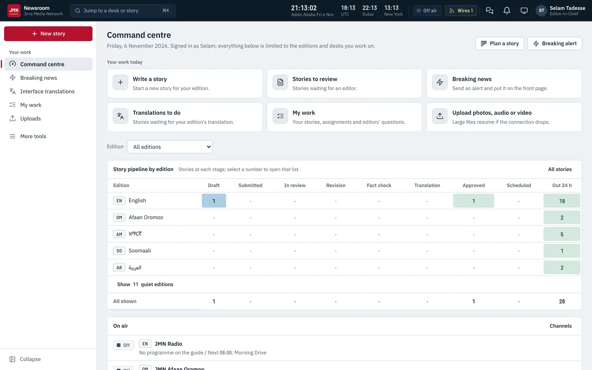
The Command centre: your jobs for today, the story pipeline, the review queue and what is on air.
It shows:
| Panel | What it shows |
|---|---|
| Your work today | Large buttons for your daily jobs, for example Write a story, Stories to review or Translations to do |
| Story pipeline by edition | How many stories are in each stage (Draft, Submitted, In review, Revision, Fact check, Translation, Approved, Scheduled) and how many went out in the last 24 hours |
| Breaking | The active breaking alert, if there is one, with a link to the Breaking desk |
| On air | The channels on air now and their rundowns (broadcast outlets) |
| Review queue | Stories waiting for an editor |
| Planning | Deadlines in the next 12 hours |
| Wires | Wire flashes from the last two hours |
| Just published | Stories published in the last day |
| In the newsroom now | Colleagues who are signed in |
Use the Edition filter at the top to see one edition only. Editors also see Plan a story and Breaking alert buttons at the top of the page.
My work
My work is your personal list. It has:
- Inbox: mentions, queries and tasks for you.
- My stories in progress.
- My tasks: tasks assigned to you or claimed by you. Overdue tasks have a red outline.
- Up for grabs: unassigned tasks you are allowed to do. Claim one so nobody duplicates the work.
The bell at the top of the screen shows new items in your inbox.
2.5Writing a story
To create a story
-
Select New story (or press
N). -
Write the Headline: what happened, in one line.
-
Write the Summary: two sentences for cards, search and social media.
-
Write the Body. A blank line starts a new paragraph. A line that starts with
##becomes a sub-heading. - Choose the Edition. This is the language edition the story is written for. Other editions can adapt it later. Each edition owns its own text.
- Choose the Story type:
| Type | Use it for |
|---|---|
| Article | A straight news report |
| Breaking | Urgent news, flagged on the site |
| Analysis | Context and interpretation |
| Explainer | Background, questions and answers |
| Interview | Questions and answers with a source |
| Opinion | Clearly labelled commentary |
| Investigation | Long-form work with protected sources |
| Fact check | A claim with a rating |
| Live blog | Rolling updates |
| Photo story | Image-led stories |
| Video story | Video-led stories |
| Special report | Packaged coverage |
-
Choose the Priority: Routine, Normal, Important, Urgent or Breaking.
-
Select Create draft.
Drafts are private to the desk until they are submitted, reviewed and approved. The full editor, Story Studio, opens.
2.6Editing a story in Story Studio
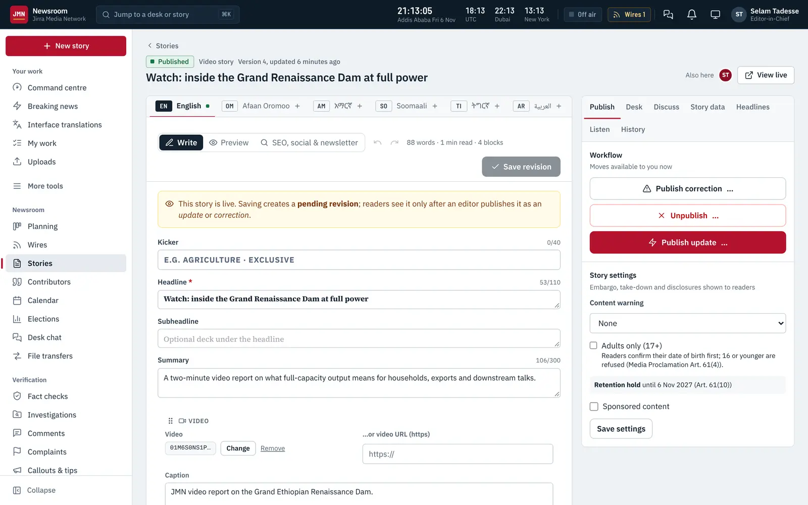
Story Studio: edition tabs at the top, the text in the middle and the inspector with the Publish tab on the right.
The parts of the editor
- Edition tabs along the top. Each tab is one language edition of the story. A small mark shows if that edition is live. A + means the edition has no version yet.
- The text: Kicker, Headline, Subheadline, Summary, and the body as a list of blocks.
- SEO and sharing fields: SEO title, Meta description, Keywords, Social title and Social description. A preview shows the story as it appears in Google search, on a social card and in a newsletter.
- The inspector on the right, with these tabs:
| Tab | What it is for |
|---|---|
| Publish | Ready to publish? checks, Workflow buttons and Story settings |
| Desk | Notes, queries and tasks on this story |
| Discuss | A chat about this story |
| Story data | People, places and topics; references and citations; related coverage; the list of editions |
| Translate | Translation help (only on an edition other than the original) |
| Headlines | Headline tests, if your outlet uses them |
| Listen | A voice reading of the story, published only after you approve it |
| History | Workflow history and versions |
To add a block
-
Select Add block.
-
Choose a block. The blocks are in groups:
| Group | Blocks |
|---|---|
| Text | Paragraph, Heading, List, Quote, Pull quote, Separator |
| Media | Image, Gallery, Video, Audio, Document, Embed, Social post |
| Journalism | Fact box, Content warning, Editor's note / source, Timeline, How we reported this, Live update, Author card |
| Data | Table, Chart, Map, Election results, Reader poll or quiz |
| Distribution | Related stories, Reader callout, Newsletter sign-up |
- Fill in the block's fields. In a paragraph you can write
**bold**,*italic*and[link](https://...).
Every image needs Alt text (for screen readers), unless you mark it Decorative only.
To save your work
- Select Save draft (or press
Ctrl+S/Cmd+S). - If the story is already live, the button says Save revision. Readers see your changes only after an editor publishes them as an update or a correction.
- If your browser closed before you saved, the editor offers your unsaved changes next time. Select Restore them or Discard.
- If someone else saved the story while you worked, you see a conflict message. Select Reload the latest version.
Story settings
In the Publish tab, Story settings holds:
- an embargo (the story cannot be published before this time);
- Take down after (the story is hidden from readers after this time);
- a Content warning (Distressing material, Graphic images or descriptions, Sensitive subject);
- Sponsored content disclosure;
- Retention hold.
2.7Workflow and approvals
Every story moves through fixed stages. The Workflow section in the Publish tab shows only the moves you may make now.
| Stage | Meaning | Usual next moves (button) |
|---|---|---|
| Draft | Being written | Submit for review |
| Submitted | Waiting for an editor | Start review, Return to reporter |
| Under review | An editor is working on it | Approve, Return to reporter, Send to fact check, Send to translation |
| Needs revision | Sent back to the reporter with a comment | Submit for review |
| Fact check | With the fact checkers | Start review (returns it to the editor, with a comment) |
| Translation | With the translators | Start review |
| Approved | Ready to go out | Publish now, Schedule |
| Scheduled | Will publish at a set time | Publish now, back to Approve |
| Published | Live on the website | Publish update, Publish correction, Unpublish |
| Updated / Corrected | Live, with a later change | Publish update, Publish correction, Unpublish |
| Unpublished | Taken off the website | Publish now, Archive |
| Archived | Kept on record | Restore to draft |
Some moves ask for more information before they run. They show a form when you select them:
- Return to reporter asks for a Comment for the desk.
- Schedule asks for the Publish at date and time.
- Publish correction asks for a Public correction note: what was wrong, and what is right.
Your administrator can change some rules per desk (see Workflow policies in the Administrator Guide). The publication and correction steps always stay.
To submit a story for review (reporters)
-
Save your draft.
-
Open the Publish tab.
-
Check Ready to publish? and fix what you can.
-
Under Workflow, select Submit for review.
The editors see the story in their Review queue.
To review and publish a story (editors)
- In the Command centre, open a story from the Review queue. Or open Stories and filter on Submitted.
-
Under Workflow, select Start review.
-
Edit the text. Select Save draft.
- If needed, select Send to fact check or Send to translation. Or select Return to reporter and write what must change.
-
When the story is good, select Approve.
-
Open Ready to publish?. Fix every must-fix item.
-
Select Publish now. Or select Schedule and enter the time.
-
Select View live to check the story on the website.
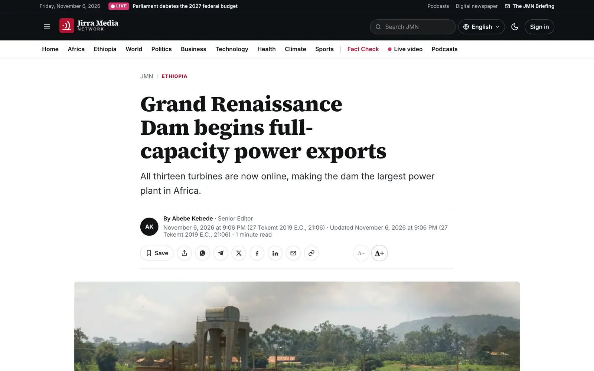
A published story, as readers see it.
The readiness check
Ready to publish? checks the text of the edition you are looking at.
| Kind | Items |
|---|---|
| Must fix (blocks publication) | Headline, body, open queries, alt text of the lead image, an image whose licence has expired |
| Warnings | Summary, SEO title length, image size and credit, section, byline, topics, open tasks, alt text of body images, insecure links, possible duplicate, short body |
On a story that is already live, only open queries block publication. Corrections are never blocked by small issues.
2.8Notes, queries and tasks
The Desk tab of a story holds the conversation about it. Only people who can see the story see it.
- A note is a comment. Select Add a note.
- A query is a must-fix question. Select Raise query. The story cannot be published, scheduled or updated while a query is open. The story's authors, the person who asked or a reviewer can resolve it.
- A task is a job on the story, for example a translation into one edition. Tasks move from open to in progress to done. Use Claim, Start, Done or Release.
- Mentions: write
@and the first part of a colleague's e-mail address, for example@amina. Only colleagues who can already see the story are told.
2.9Corrections, updates and unpublishing
When a story is live, saving creates a pending revision. Readers do not see it yet.
To publish an update
-
Make your changes and select Save revision.
-
In Workflow, select Publish update and write a comment for the desk.
To publish a correction
-
Fix the text and select Save revision.
-
In Workflow, select Publish correction.
-
Write the Public correction note. Readers see it.
-
Confirm.
To take a story down
- Select Unpublish and write the reason. The story leaves the website. It stays in the newsroom with its history.
- To hide a story at a planned time, set Take down after in Story settings.
Every change is kept as a version. Open the History tab to see the workflow history and the versions.
2.10Photos, audio, video and documents
To upload large files
-
Open Uploads.
-
Choose the files. Large recordings and photo sets are sent in small pieces. If the connection drops, the upload continues from where it stopped.
- When the upload ends, the file is in the Media library.
Each file is fingerprinted before it is sent, so the newsroom can prove that it arrived intact.
To describe a file in the Media library
-
Open Media library and select the file.
-
Fill in Credit & rights: Creator / photographer, Copyright holder, Credit line (shown to readers), Licence, Source / agency, Usage restrictions and Rights expire on.
-
Fill in Alt text & captions by edition, one per language edition.
-
If the photo crops badly, set the Focal point.
Files whose rights have expired are removed from public pages automatically.
To put a photo in a story
- In Story Studio, select Add block and choose Image (or Gallery, Video, Audio or Document).
-
Choose the file from the media library.
-
Write the Caption, Credit and Alt text.
Bureaus can also send large files to the studio with File transfers.
2.11Editions, languages and translation
Your outlet publishes one edition per language, for example English, Amharic and Arabic. Each edition has its own website address, its own front page and its own text for every story. Arabic and other right-to-left languages are shown right to left.
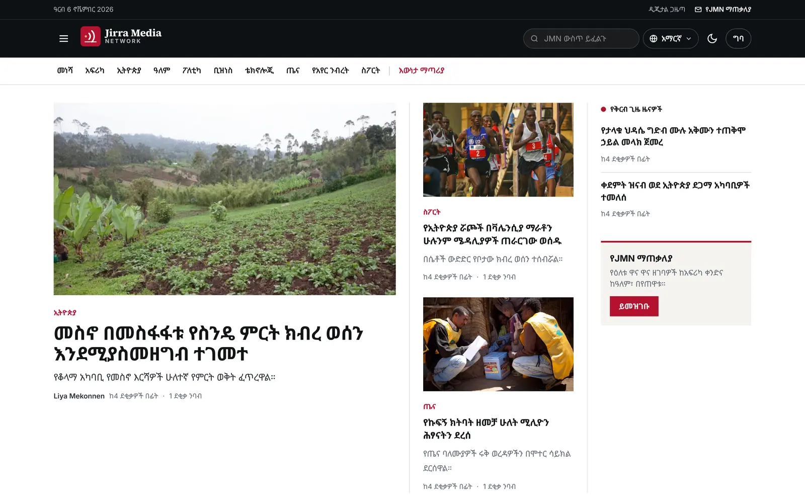
An Amharic edition of the website.
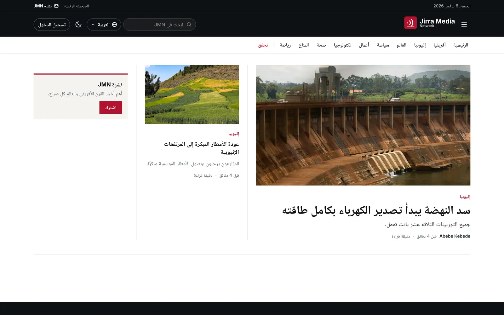
An Arabic edition. The whole page runs right to left.
Stories are written or adapted per edition. One edition never overwrites another automatically.
To write a story for another edition
-
Open the story in Story Studio.
-
In the edition tabs at the top, select the edition you want (it shows + if there is no version yet).
-
The original text appears beside the editor as Source text (read only).
-
Select Start from the ... text to copy the headline, summary and blocks as a starting point. Replace every part with your translation.
- Open the Translate tab for help: translation memory, the edition's termbase and a machine draft. Machine output is marked as machine-assisted and needs a second reviewer.
-
Select Save draft.
-
In the Publish tab, under Translation, select Submit translation for review. The editor who asked for it is told.
To approve a translation (reviewers)
-
Open the story and select the edition's tab.
-
In the Publish tab, under Translation, select Approve translation.
- If the story is already live, you can select Approve and publish (the edition goes live now) or Approve only (publish later).
Termbase and interface translations
- Termbase holds the agreed spelling of names and terms per edition. The Translate tab uses it.
- Interface translations holds the words around the journalism: menus, buttons and notices. English is the source. Missing words fall back to English. Translators review this text here.
2.12Breaking news
Sending a breaking alert is one deliberate action for one published story in one edition. Nothing is ever published from the breaking desk. Publish the story first.
To send a breaking alert
-
Make sure you signed in with your authenticator code in this session.
-
Open Breaking news (or select Breaking alert in the Command centre).
-
Under Send a breaking alert, choose the Story. Only published stories are listed.
-
Check the Headline in the breaking bar (up to 160 characters).
- Under Where it goes, choose the channels:
| Channel | What happens |
|---|---|
| Breaking bar | The story leads the edition's breaking bar (always) |
| Homepage lead | The story is pinned as the lead of the front page while the alert is active |
| Social accounts | A "BREAKING" post is queued on each active account of that edition |
| Breaking newsletter | A draft is made on the edition's breaking list for review. It is never sent automatically. |
| Live coverage | Links the alert to a live video of the same edition |
- Select Send breaking alert.
An alert lasts 6 hours by default and at most 48 hours. Use Extend or End alert on the active alert. Every channel records whether it was done, queued, skipped or failed, so you see exactly where the alert went.
2.13Live blogs and live events
Live blogs
A live blog is a story with the type Live blog. Readers see a timeline of updates that refreshes by itself.
- Create a story with the Story type Live blog and publish it as usual.
-
To add an update, use the Live update block in Story Studio (it has a Time and the Update text).
-
Select Save revision, then Publish update.
Staff with the right permission can also add live entries to a published live blog through the newsroom API. Readers on the website and in the app see new entries without reloading.
Live events (video)
Live events is for live video streams. It needs the live streaming feature.
-
Open Live events.
-
Under Schedule a live event, fill in the Title, Description, Edition and Scheduled start.
-
Add a Companion story and a Poster if you have them.
-
Select Schedule.
- Give the private Ingest URL and Stream key to the crew only. Never share the encoder settings.
2.14Newsletters
Newsletters holds the e-mail newsletters of each edition. Readers sign up with double opt-in, and every e-mail has one-click unsubscribe.
To send an issue by hand
-
Open Newsletters and choose the newsletter.
-
Start a New issue.
-
Write the Subject, the Preheader (the short line shown after the subject) and the Introduction.
-
Add stories with Add a published story.... Use Move up, Move down and Remove to order them.
-
Check the Email preview.
-
Select Save draft.
- To send, enter a time in Schedule for (your local time; leave it empty to send now) and select Schedule. To stop it, select Cancel issue.
To prepare issues automatically
-
In the newsletter, open Automation and switch on Prepare issues automatically.
-
Set the Cadence, Send time and Time zone.
- Under What goes in, choose the Sources, in order (sections, topics, content types), Stories per issue, Skip if fewer than and Look back (hours).
- Leave Send automatically off if a person must check each issue. If you switch it on, set the Review window (minutes before it sends).
Automatic issues show why each story was chosen. Breaking alerts are always sent by a person.
Deliverability shows bounce and complaint rates. Editors can suppress an address there.
2.15Broadcast, radio and TV (advanced)
These workspaces need the Broadcast edition or higher, and the right role (for example Executive Producer, Broadcast Producer, Radio Producer, Studio Operator or Presenter).
| Workspace | What it is for |
|---|---|
| Channels on air | Your TV and radio channels and what is on air now |
| Rundowns | Running orders for each show |
| Programme guide | The schedule of each channel by day. Readers see it on the website and in the app. |
| Studios | Studios and control rooms, their devices and bookings |
| Studio control | Control the studio software (scenes, recording, streaming) from the newsroom |
| Graphics | Lower thirds and other on-screen graphics |
| Guests & contributors | Links for remote guests and their consent |
| Audience interactions | Questions from the audience for a show, with a moderation desk |
| Election coverage | Results graphics for election nights |
| Streaming | Where each channel streams to (YouTube, Facebook, the outlet's own media server) |
| Channels & devices | Setting up channels and studio devices (managers only) |
| Podcasts | Podcast shows and episodes |
To build a rundown
-
Open Rundowns and select New rundown.
-
Choose the Channel, the Guide slot or Programme, and From template (or Blank). Enter the Title and Air date. Select Create rundown.
- Add items (press
Nfor a new item). Each item has a Slug, Type, Title, Presenter, Source and a planned length. The rundown shows front time, back time and over/under as you go. -
Add Graphics cues to items that need on-screen graphics.
-
When the rundown is complete, select Mark ready. A rundown must be ready before you can take it to air.
To run a show
-
Open the rundown.
-
Select TAKE to put the next item on air. While on air,
Spacetakes the next item. To take a selected item, useJandKto select it and pressT. The item's studio scene and first lower third can change with it. -
The screen shows the on-air item, the time left and the projected end time.
-
The Prompter screen shows the scripts. Use
Spaceto start and stop, the arrow keys for speed, andPgUp/PgDnto move between items. A studio operator controls the prompter. - After the show, open As-run for the log of what went on air.
Use Print scripts for paper copies.
2.16The Reporter mobile app
Your outlet can publish a Reporter app for staff under its own name. Ask your administrator where to get it.
The Reporter app lets you:
- sign in with your staff account and two-step verification;
- see your assignments and move them through Accept, Start and File;
- write drafts offline (headline, summary, paragraphs and media). They are sent when you are online again;
- take photos, video and audio with the phone, with caption, credit and alt text;
- upload large files. The upload continues after a dropped connection or an app restart, also in the background;
- read desk notes and your staff inbox.
If an editor changed the story while you were offline, the app shows a conflict. Choose keep mine, take theirs or save copy.
The app's own language can be English, Amharic, Afaan Oromoo, Tigrinya, Somali or Arabic. Story text always uses the script and direction of its edition.
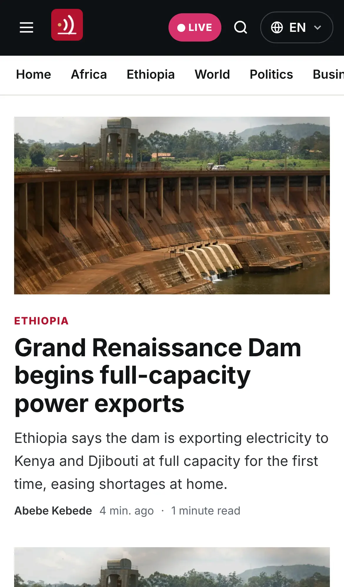
The website on a phone. Readers can also use your outlet's audience app.
2.17Other workspaces
| Workspace | What it is for |
|---|---|
| Planning | The story budget for a day, by slot or desk. Plan stories and assign them. |
| Wires | Incoming wire copy, with flashes |
| Calendar | Planned events |
| Contributors | Pieces from outside writers of opinion and analysis |
| Desk chat | Chat channels for desks and editions |
| Fact checks | Claims being checked and their evidence |
| Investigations | Long-form investigations with protected sources and legal review |
| Comments | Reader comments waiting for a decision |
| Complaints | Reader complaints and right-of-reply cases |
| Callouts & tips | "Tell us" forms for readers and the answers they send |
| Social | Posts for your social media accounts |
| Video clips & platforms | Short and vertical clips and uploads to video platforms |
| Push alerts | Notifications to readers' browsers and apps |
| SMS, USSD & voice | Text message and phone services for readers |
| Digital newspaper | A daily PDF newspaper per edition |
| Page builder | The layout of front pages and section pages |
| Edition structure | Sections and the identity (name, logo) of each edition |
| Pages & footer | Fixed pages such as About, Contact and policies |
| SEO & Google | Search engine settings and Google tools |
| Polls & quizzes | Reader polls and quizzes for stories |
| Analytics | What readers read, watch and listen to |
2.18Keyboard shortcuts
| Keys | Action |
|---|---|
N |
New story |
Ctrl+K / Cmd+K, or / |
Open the command palette (search and jump) |
G then C |
Command centre |
G then M |
My work |
G then S |
Stories |
G then P |
Planning |
G then W |
Wires |
G then R |
Rundowns |
G then T |
Studio control |
Ctrl+S / Cmd+S |
Save in Story Studio |
Working in each desk
Task guides for every desk
Step-by-step instructions for the tasks journalists do every day.
This chapter collects the tasks journalists do every day, desk by desk, as numbered steps. Each task names who may do it. If a button described here is missing on your screen, your role does not include that permission: ask your desk chief or administrator.
3.1Your account and your day
Sign in for the first time
Who can do this
Everyone with a staff account. Your administrator sends you an invitation e-mail.
Steps
- Open the invitation e-mail and select Set up your account. The link works once and expires after a few days.
- Choose a password of at least 12 characters. A sentence you can remember is better than a short word with symbols.
- If your role needs two-step sign-in, install an authenticator app on your phone (for example Google Authenticator, Microsoft Authenticator, 2FAS or Aegis), scan the code on the screen and type the six-digit code it shows.
- Save the recovery codes in a safe place. Each code can be used once if you lose your phone.
- You arrive at the Command centre.

Add a passkey so you can sign in without a password
Steps
- Open My profile and security (your name at the bottom of the menu).
- In Passkeys, select Add a passkey. If you signed in more than 15 minutes ago, you are asked to sign in again first.
- Follow your device's prompt: fingerprint, face or the device PIN.
- Next time, choose Sign in with a passkey on the sign-in page.
Plan your day with My work
Steps
- Open My work.
- Deal with Queries first: editors are waiting for your answer.
- Then Reviews if you are an editor, oldest first.
- Then your Stories in order of deadline.
- Mark tasks done as you finish them; the person who set them is told.
Keyboard
G then M opens My work, G then P opens Planning and N starts a new story. Ctrl+K (or Cmd+K on a Mac) opens the command palette to search and jump anywhere.
3.2Planning desk
Pitch a story
Who can do this
Reporters and editors.
Steps
- Open Planning and select New pitch.
- Write a working title and two or three sentences on the angle: what is new, why now, who is affected.
- Choose the desk and the edition (or several editions).
- Add sources you plan to use and the media you expect (photos, video, data).
- Select Save pitch. Your desk chief sees it on the board.
Assign a story
Who can do this
Desk chiefs and editors with the planning permission.
Steps
- Open the pitch on the Planning board.
- Choose the owner and, if needed, a photographer or video journalist.
- Set the deadline and the target publication time.
- Select Assign. The reporter is notified and the story appears in their My work.
Put an event in the calendar
Steps
- Open Calendar and select the day.
- Select New event, give a title, time, place and the desk that covers it.
- Link a pitch if one exists, so the coverage plan and the event stay together.
3.3Writing desk
Write a story
Who can do this
Reporters and editors.
Steps
- Select New story, or Start story on an assigned pitch.
- Choose the edition and the type of story.
- Write the headline (the readiness check warns when it is too long for search results) and the summary (one or two sentences shown under the headline and in sharing cards).
- Write the body. Press Enter for a new paragraph; type
/to insert a block: heading, photo, gallery, video, audio, quote, fact box, timeline, embed or related link. - Open Settings and choose the section, tags, byline and location.
- Add a main image with a caption, a credit and alternative text that describes the picture for people who cannot see it.
- The story saves itself every few seconds. Saved at the top confirms it.

Add a photo from the media library
Steps
- In Story Studio, put the cursor where the photo should go and type
/photo. - Search the library, or select Upload to add a new file.
- Pick the photo. Check the caption and credit; change the caption for this story if needed (the library caption stays unchanged).
- Drag the focal point to the subject's face so crops in lists and on phones keep it.
Embed a social media post or a map
Steps
- Copy the address of the post or map.
- Type
/embedin Story Studio and paste the address. - Check the preview. Some platforms load their content only when the reader agrees to it; the page explains this to readers.
Submit your story for review
Steps
- Open Readiness in the side panel. Fix every red item; yellow items are advice.
- Select Submit for review. Add a note for the editor if there is anything they must know (an embargo, a legal concern, a source to protect).
- The story is locked for you while an editor works on it. You are notified of queries and of publication.
Answer an editor's query
Steps
- Open the story from My work → Queries. The query is highlighted next to the paragraph it concerns.
- Change the text, or answer in the query thread.
- Select Resolve when the question is settled.
3.4Editing desk
Edit and publish a story
Who can do this
Editors with the publish permission for that desk and edition.
Steps
- Open My work → Reviews, or the Stories list filtered by Submitted.
- Select Start editing. The reporter can no longer change the text until you return it or publish.
- Edit the text. Use Track changes to show the reporter what you changed, or Compare to see versions side by side.
- Raise a query on any paragraph you cannot fix yourself.
- Check the readiness list, the headline and the main image.
- If an approval chain applies (for example legal review), select Send for approval; otherwise choose Publish now or Schedule with a date and time.
Approval chains
When your outlet has set an approval chain for this kind of story, the Publish button stays disabled until every required approver has approved. You cannot approve your own story.
Return a story to the reporter
Steps
- Select Return to reporter.
- Write what needs to change.
- The story goes back to the reporter's My work with your note.
Schedule a story
Steps
- Select Schedule.
- Choose the date and time. The time is in the edition's time zone, shown next to the field.
- Confirm. The story appears in Scheduled and is published automatically, even if nobody is signed in.
Publish an update
Steps
- Open the published story and select Edit published story.
- Change the text.
- Choose Update and write a short update note for readers (for example Updated with the minister's statement).
- Select Publish update. The time of the last update is shown to readers.
Publish a correction
Steps
- Open the published story and select Add correction.
- Fix the error in the text.
- Write the correction note: what was wrong and what is right. Do not repeat a defamatory claim.
- Select Publish correction. The note appears on the story and in the public corrections log, and webhooks and partners are told.
Take a story down
Use with care
Taking a story down removes it from the website, apps and feeds. It stays in the newsroom with its history. Your outlet's policy may require the editor-in-chief or legal to approve.
Steps
- Open the story and select Unpublish.
- Choose the reason (legal, error, embargo, other) and write a note.
- Choose whether readers who open the old address see a short notice or a page not found.
- Confirm with your two-step code if asked.
3.5Translation desk
Send a story to another edition
Steps
- In Story Studio open Translations.
- Select the editions that should carry the story and choose Request translation.
- The request appears on the Translation desk of each edition.
Translate a story
Who can do this
Translators and edition editors.
Steps
- Open Translations and select a story in To translate.
- The original is on the left, your version on the right, block by block.
- Use the termbase suggestions for names and places. Use the machine draft only if your outlet allows it; it is marked as a draft until you change and approve it.
- Adapt the headline for your readers: a literal translation is often not the best headline.
- Select Send for review. An edition editor approves and publishes.
Add a term to the termbase
Steps
- Open Termbase and select New term.
- Enter the term in the source language and its approved form in each language, with a note on usage.
- Save. Writers and translators see it as a suggestion from now on.
3.6Media desk
Upload a large video from the field
Steps
- Open Media → Upload, or use the Reporter app.
- Choose the file. Large files are sent in pieces; if the connection drops, the upload continues where it stopped when you are back online.
- When processing is finished, the file shows a thumbnail and the web versions.
- Add captions, credit and the rights.
Record rights and expiry for agency material
Steps
- Open the media item.
- In Rights, choose the licence type and the owner, and set the expiry date.
- Save. Before expiry, editors are warned, and the item is flagged in every story that uses it.
Prepare a vertical clip for social platforms
Steps
- Open Video and select the source video.
- Choose New clip, set the in and out points.
- Choose the vertical format; move the frame to keep the subject in view.
- Add captions (generated or typed) and the outlet's branding.
- Choose the platforms and publish or schedule.
3.7Breaking and live desk
Send a breaking alert
Who can do this
Editors with the breaking-news permission. Your outlet may require a second editor to confirm.
Steps
- Open Breaking and select New alert.
- Write one clear line: what happened, where. It appears in banners and notifications as written.
- Link the story, or create a short holding story now and update it later.
- Choose the editions, and the channels: website banner, app and web push, SMS where available.
- Select Send. If a second confirmation is required, the alert waits for it.
- When the news is no longer breaking, select End alert.
Run a live blog
Steps
- Open Live and select New live page. Give a headline, a summary and the editions.
- Publish the live page; it appears on the front page where editors place it.
- Write posts in the composer. Add photos, video, quotes or embeds.
- Mark important posts as key events; they appear in the summary at the top.
- Pin a post to keep it at the top.
- When coverage ends, select End live coverage and write a closing summary.
3.8Audience desk
Send a newsletter issue
Steps
- Open Newsletters and the list.
- Open the next automatic issue, or select New issue.
- Check the stories, the order, the subject line and the preview text.
- Select Send test to receive it yourself; check it on a phone.
- Select Schedule or Send now.
Send a push notification
Steps
- Open Notifications and select New notification.
- Write the text, link the story, choose the editions and topics.
- Send or schedule. Results (delivered and opened) appear after a few minutes.
Moderate comments
Steps
- Open Comments. Reported comments are at the top.
- For each comment choose Approve, Hide or Reject, with a reason from the community rules.
- Block a reader who repeatedly breaks the rules; the reason is recorded.
Publish a callout
Steps
- Open Callouts and select New callout.
- Write what you are looking for and why, and how answers will be used.
- Choose the questions (text, photo, document, contact) and the consent text.
- Publish. Place the callout in stories or on the front page.
- Read answers in the callout; move useful material to Uploads for checking.
3.9Standards desk
Handle a reader complaint
Steps
- Open Complaints. New complaints show the deadline your policy sets.
- Assign the complaint to the responsible editor.
- Investigate; record what you found.
- Reply to the reader from the complaint. If a correction is needed, publish it from the story and link it.
- Close the complaint with the outcome.
Publish a fact-check
Steps
- Open Fact-checks and select New fact-check.
- Enter the claim, who made it, where and when.
- Add the evidence with sources.
- Choose the rating and write the verdict.
- Publish. The verdict is marked up so search engines can show the rating.
3.10Field work: the Reporter app
File a story from your phone
Steps
- Open the Reporter app and sign in with your staff account and two-step verification.
- Open Assignments and move yours through Accept and Start, or create a new draft.
- Write the headline, summary and paragraphs. Drafts can be written offline.
- Add photos, video or audio from the phone's camera, with caption, credit and alternative text.
- Select File. Without a connection, the app keeps the draft and sends it when you are online again; large uploads continue after a dropped connection or an app restart.
When someone else changed the story
If an editor changed the story while you were offline, the app shows a conflict. Choose keep mine, take theirs or save copy.
Protect your sources in the field
Lock your phone with a PIN or fingerprint, keep sensitive notes out of ordinary chat and note apps, and file material through the Reporter app rather than sending it through personal messaging.
Screen by screen
Newsroom screens reference
Every newsroom screen, in the order of the menu.
Each page below shows one screen as it appears to a signed-in editor-in-chief of the example outlet Horn Daily, followed by what the screen is for, the fields and buttons it offers and how to use it. People with fewer permissions see fewer buttons; a screen they may not use is not in their menu.
4.1Command centre
The newsroom front page. It shows what needs you now: stories waiting for your review, your deadlines, breaking alerts, what is live on each edition, wires on your watchlists and the health of the system. Every card links to the workspace where you act on it.
Who uses it: Everyone who signs in to the newsroom; each person sees the cards their role allows.
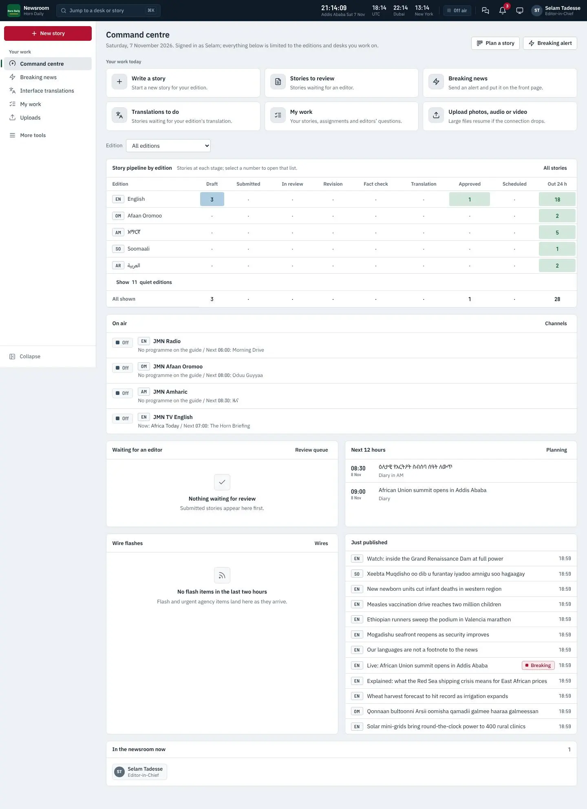
Sections on this screen
- Your work today
- Story pipeline by edition
- On air
- Waiting for an editor
- Next 12 hours
- Wire flashes
- Just published
- In the newsroom now
Buttons and actions
- Show 11 quiet editions
Columns
- Edition
- Draft
- Submitted
- In review
- Revision
- Fact check
- Translation
- Approved
- Scheduled
- Out 24 h
- EN English
- OM Afaan Oromoo
- AM አማርኛ
- SO Soomaali
How to use it
- Sign in; the command centre opens.
- Read the cards from top left: items waiting for you come first.
- Select a card to open the story, review or alert.
- Use the menu on the left to go to any workspace.
4.2My work
Your personal list: stories you own, stories assigned to you, reviews waiting for you, queries other people raised on your work and tasks with deadlines.
Who uses it: Every journalist.
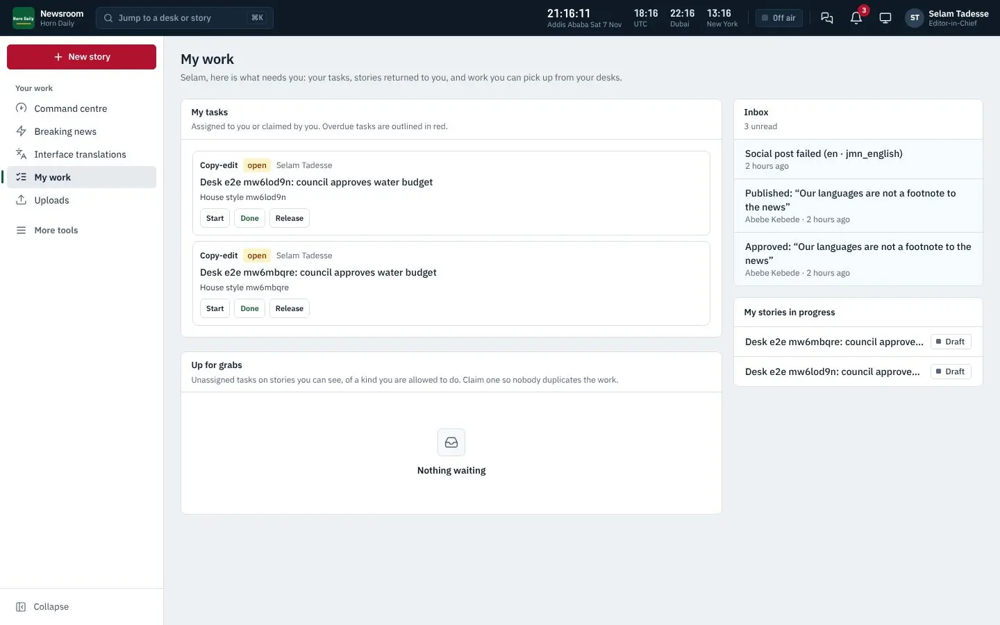
Sections on this screen
- My tasks
- Up for grabs
- Inbox
- My stories in progress
Buttons and actions
- Start
- Done
- Release
How to use it
- Open My work from the menu.
- Work from the top: overdue items are marked in red.
- Select an item to open it in Story Studio or the review screen.
4.3Planning
The planning board for pitches and assignments. Each card is a planned story with its desk, edition, owner, deadline and status. Editors move cards between columns and assign them to reporters.
Who uses it: Editors and desk chiefs, reporters for their own pitches.

Sections on this screen
- Saturday 7 November 2026 Today
- Not slotted
- Morning
- Midday
- Afternoon
- Evening
- Overnight
- Web
- TV
- Radio
- Social
Fields
- Go to date
Buttons and actions
- Previous
- Today
- Next
- Day
- Week
- By slot
- By desk
- 0 unassigned
- የአዲስ አበባ የትራንስፖርት ታሪፍ ለውጥ AM AN Ahmed Nur 16:00 due today Assigned
- E2E 195102 press conference LM Liya Mekonnen 17:00 due today Assigned
How to use it
- Select New pitch, give a working title, a short angle, the desk and the edition.
- An editor assigns the pitch to a reporter and sets a deadline.
- When writing starts, open the card and choose Start story: Story Studio opens with the pitch details filled in.
4.4Editorial calendar
The shared diary of planned events, anniversaries, scheduled publications and coverage plans for every desk and edition, by day, week or month.
Who uses it: Editors and desk chiefs, planners.
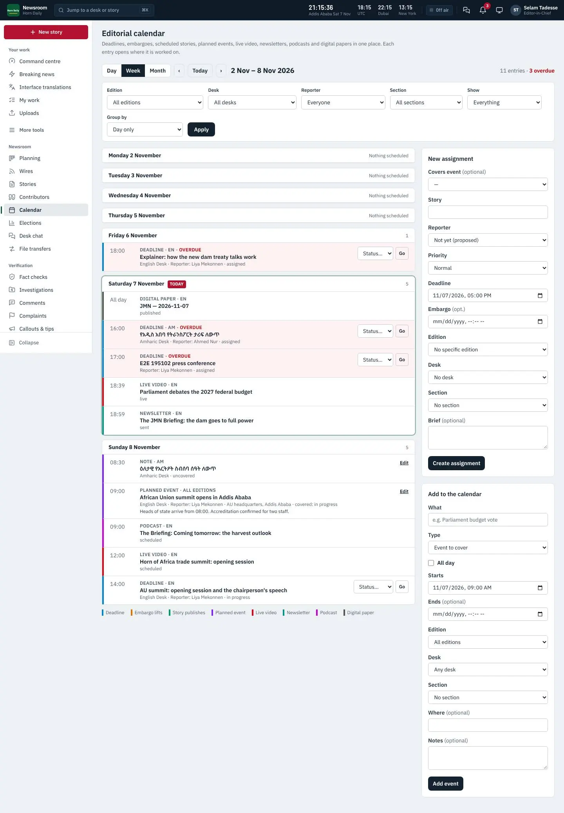
Sections on this screen
- 2 Nov – 8 Nov 2026
- Monday 2 November Nothing scheduled
- Tuesday 3 November Nothing scheduled
- Wednesday 4 November Nothing scheduled
- Thursday 5 November Nothing scheduled
- Friday 6 November 1
- Saturday 7 November TODAY 5
- Sunday 8 November 5
- New assignment
- Add to the calendar
Fields
- Group by Day only Desk Reporter Edition
- Change status of Explainer: how the new dam treaty talks work
- Change status of የአዲስ አበባ የትራንስፖርት ታሪፍ ለውጥ
- Change status of E2E 195102 press conference
- Change status of AU summit: opening session and the chairperson's speech
- Covers event (optional) — ዕለታዊ የአርትዖት ስብሰባ ሰዓት ለውጥ
- Story
- Priority Routine Normal Important Urgent Breaking
- Deadline
- Embargo (opt.)
- Brief (optional)
- What
- Type Event to cover Special coverage period Holiday / reduced desk Planning note
- All day
- Starts
- Ends (optional)
- Where (optional)
- Notes (optional)
Buttons and actions
- Apply
- Go
- Edit
- Create assignment
- Add event
4.5Stories
Every story in the newsroom, filtered by edition, desk, status, author and date. From here you open a story, create a new one or see what is waiting for review.
Who uses it: Everyone with editorial permissions; reporters see their own stories and those of their desk.
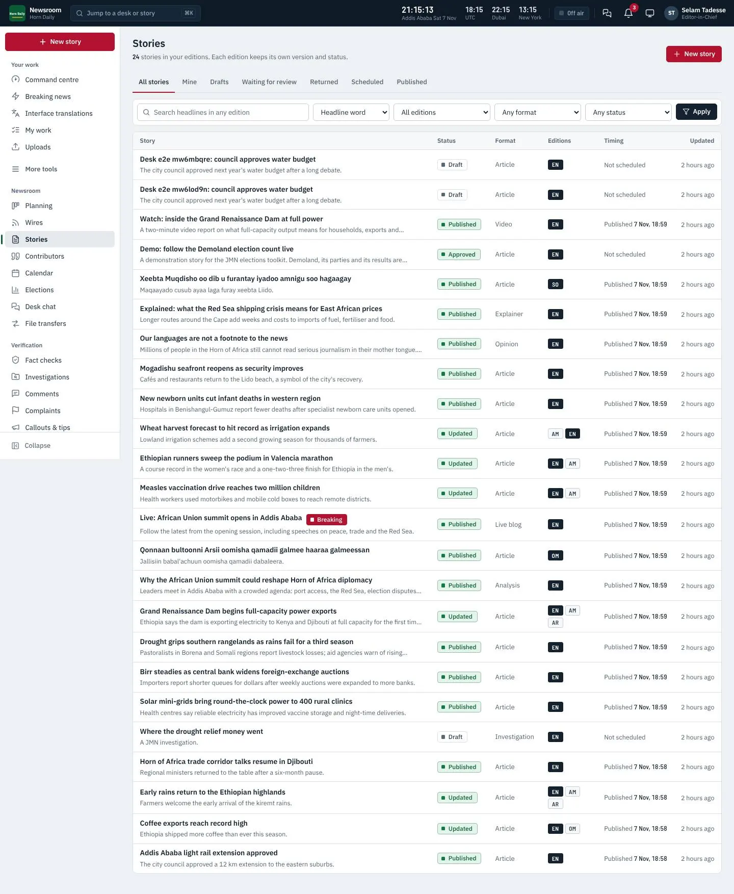
Fields
- Search headlines
- Search mode
- Edition
- Format
- Status
Buttons and actions
- Apply
Columns
- Story
- Status
- Format
- Editions
- Timing
- Updated
How to use it
- Use the filters at the top to narrow the list.
- Select a headline to open it in Story Studio.
- Select New story to start a new one.
4.6Story Studio
The editor for one story: headline, summary, body blocks, media, settings, workflow and history. The side panels hold notes and queries, the readiness check, search settings, versions and translations.
Who uses it: Reporters write; editors edit, approve and publish.
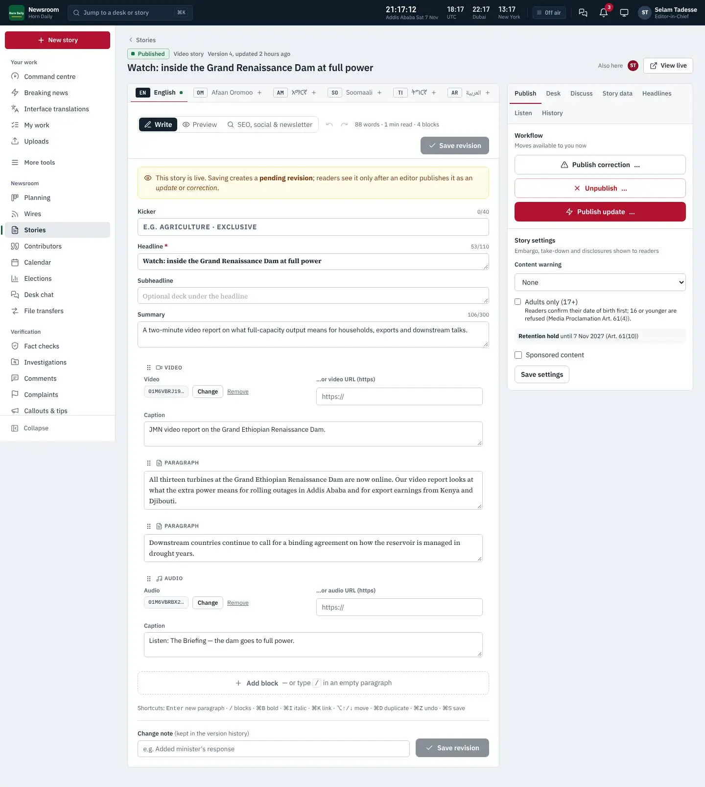
Sections on this screen
- Workflow
- Story settings
- Notes, queries and tasks
- Tasks
- People, places and topics
- References and citations
- Related coverage
- Editions
- Headline tests · English
- Voice reading
- Workflow history
- Versions
Tabs
- Write
- Preview
- SEO, social & newsletter
- Publish
- Desk
- Discuss
- Story data
- Headlines
- Listen
- History
Fields
- Kicker
- Headline *
- Subheadline
- Summary
- …or video URL (https)
- Caption
- …or audio URL (https)
- Change note (kept in the version history)
- Content warning None Sensitive subject Distressing material Graphic images or descriptions
- Sponsored content
- Add a note
- Message
- Include retired references
- Add reference
- EditionShared across editionsENOMAMSOTIARSWTRZHFRAAAWNSIDANUNUSES
- Title
- Reference URL (optional)
- Publisher (optional)
- Publication date (optional)
- Access date (optional)
- Research notes (optional)
- Variant BReaders who see it on fronts and lists; the article page keeps your headline.
Buttons and actions
- Write
- Preview
- SEO, social & newsletter
- Undo
- Redo
- Save revision
- Move Video up
- Move Video down
- Duplicate Video
- Delete Video
- Change
- Remove
- Insert block below
- Move Paragraph up
- Move Paragraph down
- Duplicate Paragraph
- Delete Paragraph
- Move Audio up
- Move Audio down
- Duplicate Audio
- Delete Audio
- Add block — or type / in an empty paragraph
How to use it
- Write the headline and summary.
- Add blocks with the + button: text, heading, photo, video, quote, embed, fact box.
- Fill the settings: section, tags, author, image caption and alternative text.
- Open Readiness and fix what it lists.
- Select Submit for review (reporters) or Publish / Schedule (editors).
4.7New story
Starts a new story. You choose the edition, the type (news, feature, opinion, explainer, live blog, photo or video story) and the desk, then Story Studio opens.
Who uses it: Reporters and editors.
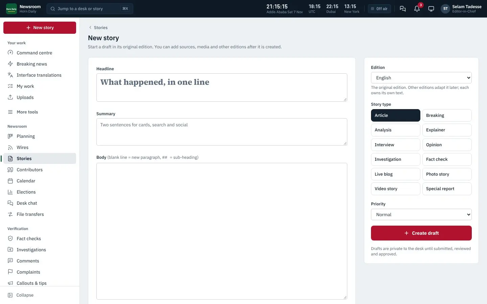
Fields
- Headline
- Summary
- Body (blank line = new paragraph, ## = sub-heading)
- Edition
- Story type
- Priority
Buttons and actions
- Article
- Breaking
- Analysis
- Explainer
- Interview
- Opinion
- Investigation
- Fact check
- Live blog
- Photo story
- Video story
- Special report
- Create draft
How to use it
- Choose the edition and type.
- Type a working headline.
- Select Create; the editor opens and saves as you write.
4.8Breaking news
Sends a breaking alert: a banner on the website and apps, push notifications and, where set up, SMS, to one or several editions. Shows alerts that are live and those that have ended.
Who uses it: Editors with the breaking permission; a second editor confirms when the outlet requires it.

Sections on this screen
- On air now (0)
- Recently ended
- Send a breaking alert
Fields
- Headline in the breaking bar (160 left)
- Keep it up for 1 hour 2 hours 3 hours 6 hours 12 hours 24 hours 48 hours
- Where it goes
- Breaking bar Always on: the story leads the edition's breaking bar.
- Homepage lead Pins the story as the homepage lead while the alert is active.
- Social accounts Queues a BREAKING post on each active account of the edition.
- Live coverage Links the alert to a live video or live blog.
- Web push Notifies readers of the edition who turned on breaking-news alerts.
- WhatsApp WhatsApp channel posting is not connected yet.
Buttons and actions
- SEND BREAKING ALERT
How to use it
- Write a short alert line (it is shown in banners and notifications).
- Link the story, or create a short one.
- Choose the editions and channels.
- Select Send; confirm when asked.
- End the alert when the news is no longer breaking.
4.9Live coverage
Live blogs and live video events. Create a live page, post updates, pin key events and end the coverage.
Who uses it: Editors and desk chiefs, live producers.
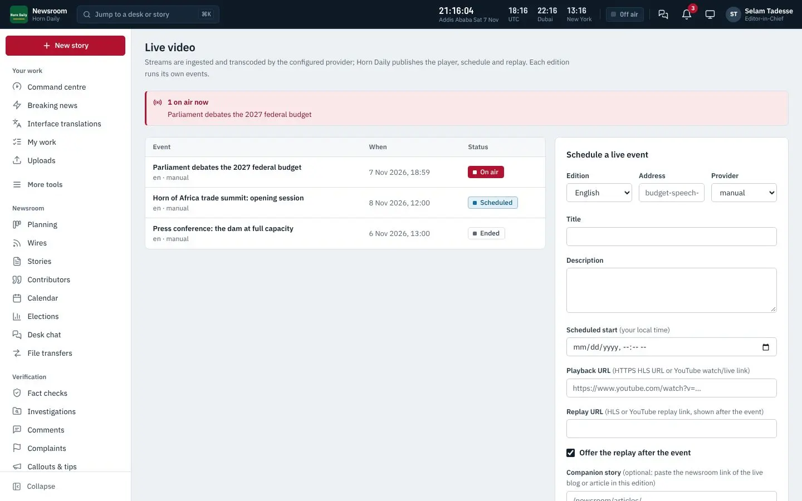
Sections on this screen
- Schedule a live event
Fields
- Address
- Provider manual mux (not configured)
- Title
- Description
- Scheduled start (your local time)
- Playback URL (HTTPS HLS URL or YouTube watch/live link)
- Replay URL (HLS or YouTube replay link, shown after the event)
- Offer the replay after the event
- Poster (16:9 image)
Buttons and actions
- Schedule
Columns
- Event
- When
- Status
4.10Live blog desk
The desk for one live page: write posts, attach media, pin and mark key events, edit or remove posts, and see what readers see.
Who uses it: Live producers and reporters assigned to the live page.
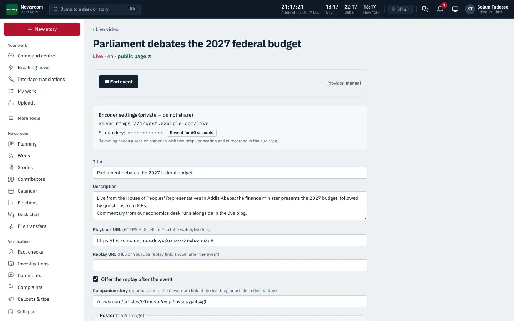
Fields
- Title
- Description
- Playback URL (HTTPS HLS URL or YouTube watch/live link)
- Replay URL (HLS or YouTube replay link, shown after the event)
- Offer the replay after the event
- Poster (16:9 image)
Buttons and actions
- ■ End event
- Reveal for 60 seconds
- Save
How to use it
- Write a post in the composer.
- Add a photo, video or embed if needed.
- Select Post; it appears to readers within seconds.
- Mark important posts as key events.
4.11Wires
Incoming agency and partner items, newest first, with search and filters. Turn an item into a story with its credit kept.
Who uses it: Editors and wire editors.
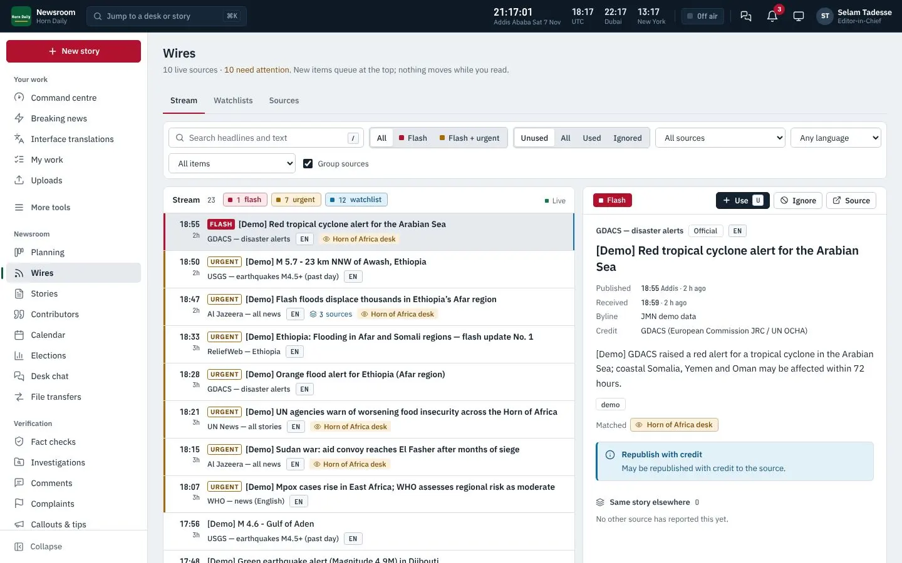
Sections on this screen
- Stream
- [Demo] Red tropical cyclone alert for the Arabian Sea
- Same story elsewhere 0
Fields
- Search the wires
- Group sources
Buttons and actions
- All
- Flash
- Flash + urgent
- Unused
- Used
- Ignored
- Use U
- Ignore
4.12Wire sources
The feeds the newsroom receives: agency, partner or RSS sources, their credentials, languages and status.
Who uses it: Wire editors and administrators.
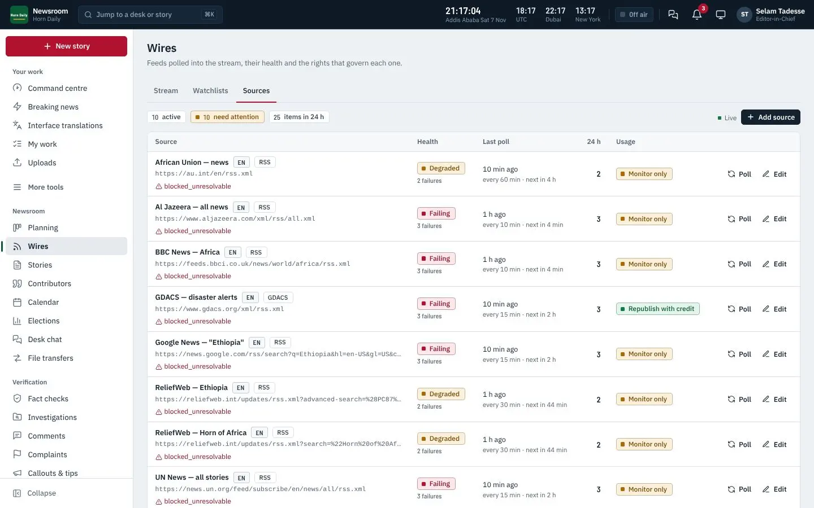
Buttons and actions
- Add source
- Poll
- Edit
Columns
- Source
- Health
- Last poll
- 24 h
- Usage
- Actions
4.13Wire watchlists
Saved searches across the wires. A match appears on the command centre and can notify you.
Who uses it: Editors.
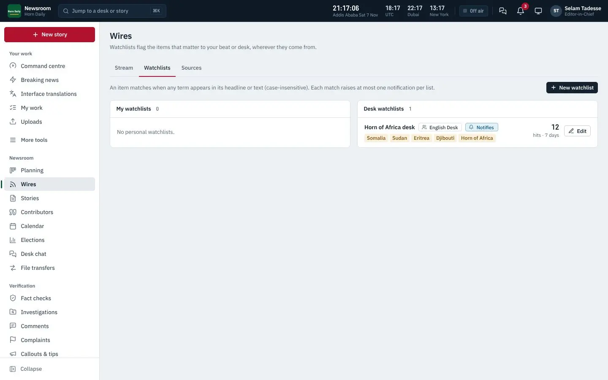
Sections on this screen
- My watchlists
- Desk watchlists
Buttons and actions
- New watchlist
- Edit
4.14Translation desk
Stories waiting to be translated into other editions, in progress and waiting for review. Translators work side by side with the original.
Who uses it: Translators and edition editors.

Sections on this screen
- Afaan Oromoo · 1308 of 1308 translated
Fields
- Search strings
Buttons and actions
- Search
How to use it
- Pick a story in the To translate list.
- Write the translation next to the original.
- Send it for review; an edition editor approves it.
4.15Termbase
Approved spellings of names, places and terms in every language, suggested while writing and translating.
Who uses it: Editors and translators.
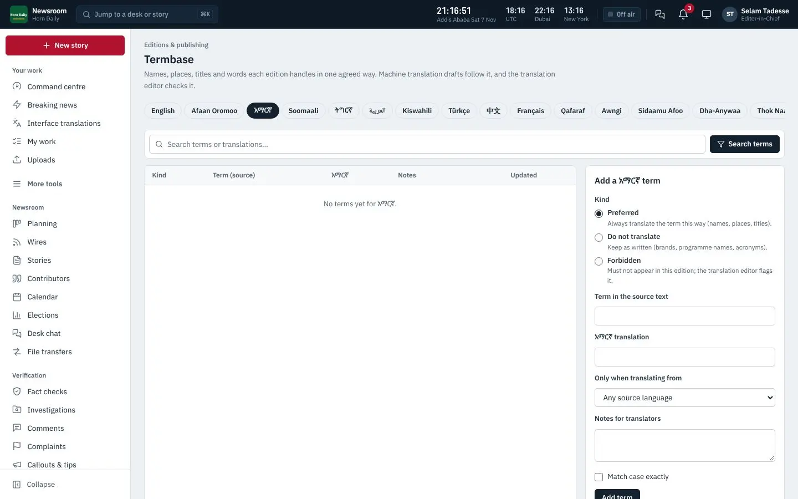
Sections on this screen
- Add a አማርኛ term
Fields
- Search terms
- Kind
- Preferred Always translate the term this way (names, places, titles).
- Do not translate Keep as written (brands, programme names, acronyms).
- Forbidden Must not appear in this edition; the translation editor flags it.
- Term in the source text
- አማርኛ translation
- Notes for translators
- Match case exactly
Buttons and actions
- Search terms
- Add term
Columns
- Kind
- Term (source)
- አማርኛ
- Notes
- Updated
- Actions
4.16Pronunciation guide
How to say names and terms, for presenters and for text-to-speech.
Who uses it: Presenters, producers, editors.
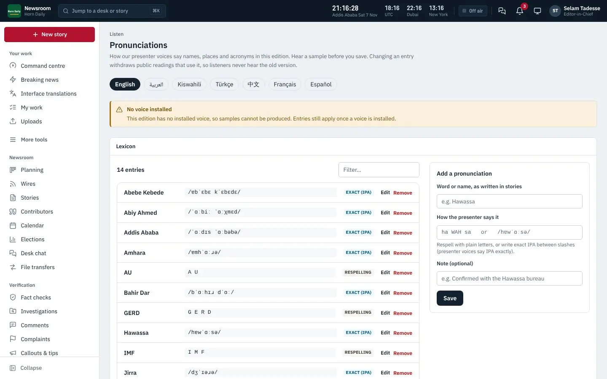
Sections on this screen
- Lexicon
- 14 entries
- Add a pronunciation
Fields
- Filter
- Word or name, as written in stories
- Note (optional)
Buttons and actions
- Edit
- Remove
- Save
4.17Media library
All photos, audio, video and documents with credits, captions, alternative text, rights and expiry. Search, filter, upload and reuse.
Who uses it: Everyone who adds media to stories.
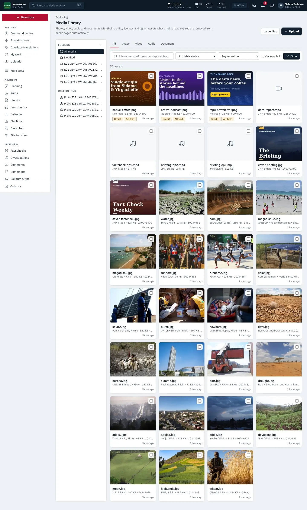
Sections on this screen
- FOLDERS
- COLLECTIONS
Fields
- Upload
- Search media
- Rights state
- Retention
- On legal hold
- Action
- Select native-coffee.png
- Select native-podcast.png
- Select mpu-newsletter.png
- Select dam-report.mp4
- Select factcheck-ep1.mp3
- Select briefing-ep2.mp3
- Select briefing-ep1.mp3
- Select cover-briefing.jpg
- Select cover-factcheck.jpg
- Select water.jpg
- Select dam.jpg
- Select mogadishu2.jpg
- Select mogadishu.jpg
- Select runners.jpg
- Select runners2.jpg
- Select solar.jpg
Buttons and actions
- New folder
- New collection
- Filter
- Apply
- Clear selection
How to use it
- Select Upload and choose files, or drag them onto the page.
- Fill credit, caption and alternative text.
- Set the rights and expiry if the material is licensed.
- Use the file in a story from Story Studio.
4.18Media item
One media file with its versions, captions in every language, rights, where it is used and its history.
Who uses it: Photo editors and everyone using the file.
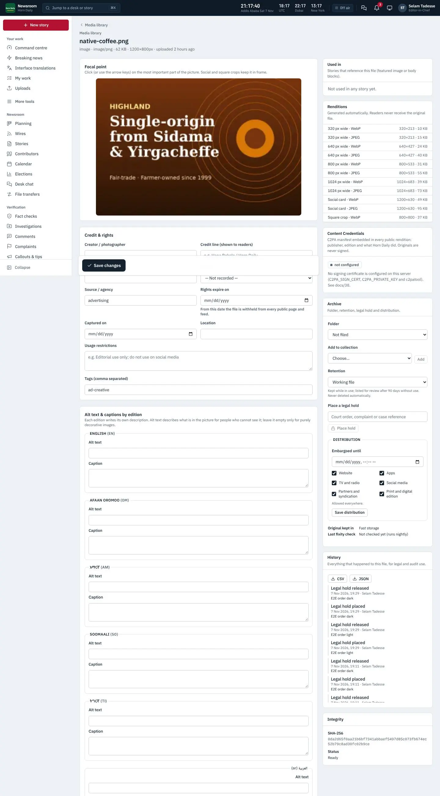
Sections on this screen
- Focal point
- Credit & rights
- Alt text & captions by edition
- Used in
- Renditions
- Content Credentials
- Archive
- History
- Integrity
Fields
- Creator / photographer
- Credit line (shown to readers)
- Copyright holder
- Source / agency
- Rights expire on From this date the file is withheld from every public page and feed.
- Captured on
- Location
- Usage restrictions
- Tags (comma separated)
- ENGLISH (EN)
- Alt text
- Caption
- AFAAN OROMOO (OM)
- አማርኛ (AM)
- SOOMAALI (SO)
- ትግርኛ (TI)
- العربية (ar)
- KISWAHILI (SW)
- TÜRKÇE (TR)
- 中文 (ZH)
- FRANÇAIS (FR)
- QAFARAF (AA)
Buttons and actions
- Save changes
- Add
- Place hold
- Save distribution
4.19Uploads
Material sent in by contributors, callouts and the Reporter app, waiting to be checked and moved into the media library.
Who uses it: Editors and photo editors.
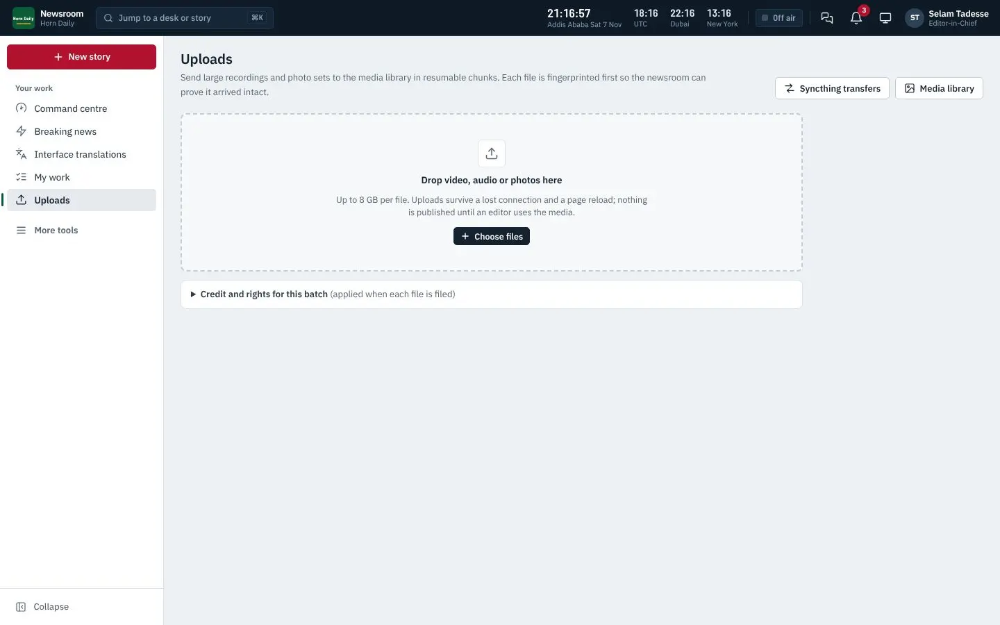
Buttons and actions
- Choose files
4.20Transfers
Resumable transfers of very large files from the field or partners, with progress and checks.
Who uses it: Video editors and producers.
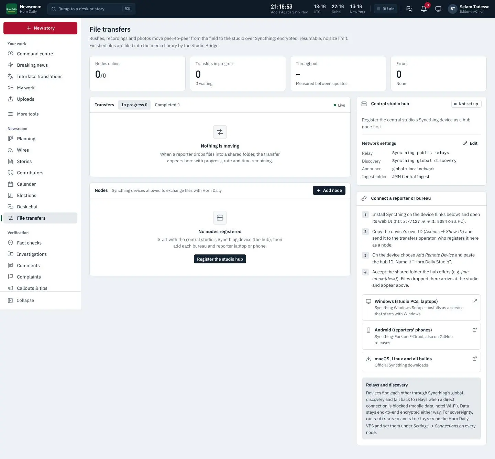
Sections on this screen
- Transfers
- Nodes
- Central studio hub
- Connect a reporter or bureau
Tabs
- In progress 0
- Completed 0
Buttons and actions
- In progress 0
- Completed 0
- Add node
- Register the studio hub
- Edit
4.21Video
Video clips: processing, vertical versions, captions, thumbnails and upload to platforms.
Who uses it: Video editors and social editors.

Sections on this screen
- Uploads
- Recent clips
- Platform channels
- YouTube
- TikTok
4.22Fact-checks
Claims being checked and published verdicts with ratings and evidence.
Who uses it: Fact-checkers and editors.

Columns
- Claim
- Edition
- Status
- Verdict
- Evidence
4.23Fact-check
One claim: who said it, the evidence, the rating and the published verdict.
Who uses it: Fact-checkers.
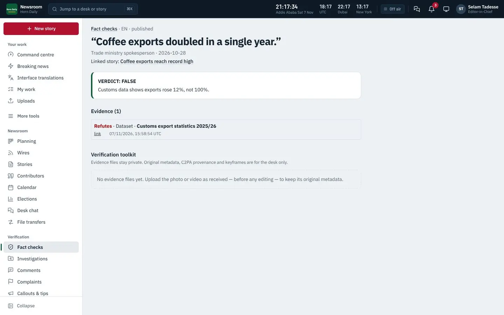
Sections on this screen
- VERDICT: FALSE
- Evidence (1)
- Verification toolkit
4.24Investigations
Confidential workspaces. Only members see an investigation; its material is never sent to outside AI services.
Who uses it: Investigation members named by an editor.

Sections on this screen
- Open an investigation
Fields
- Codename (never descriptive)
- Working title (encrypted)
- Summary (encrypted)
- Sensitivity restricted confidential secret (authenticator code needed to open)
- Lead user ID (optional — defaults to you)
Buttons and actions
- Open investigation
Columns
- Codename
- Status
- Sensitivity
- Your role
- Team
4.25Investigation workspace
Documents, notes, timeline, members and legal record of one investigation.
Who uses it: Members of the investigation.
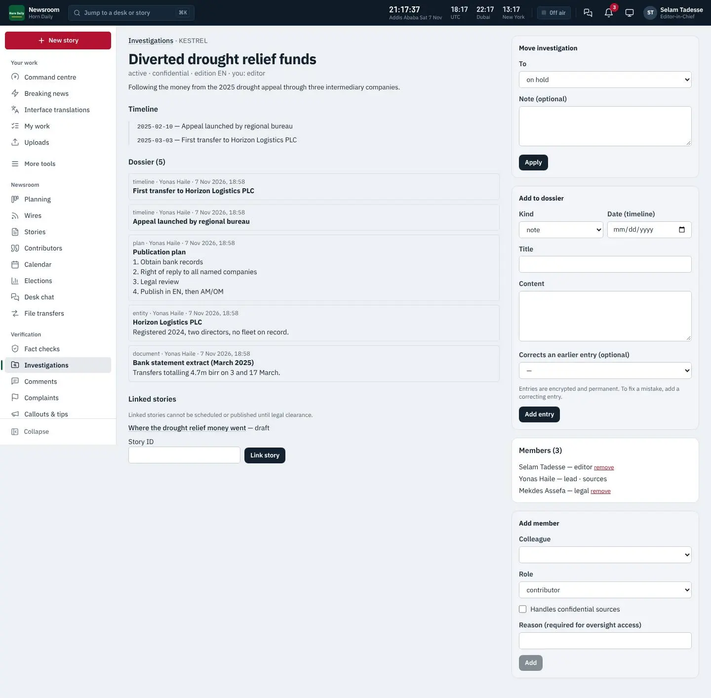
Sections on this screen
- Timeline
- Dossier (5)
- Linked stories
- Move investigation
- Add to dossier
- Members (3)
- Add member
Fields
- Story ID
- To on hold legal review closed
- Note (optional)
- Kind note document evidence timeline entity plan
- Date (timeline)
- Title
- Content
- Colleague
- Role contributor editor legal reviewer viewer
- Handles confidential sources
- Reason (required for oversight access)
Buttons and actions
- Link story
- Apply
- Add entry
- remove
- Add
4.26Entities
People, organisations and places mentioned in the outlet's reporting, linked across stories.
Who uses it: Editors and researchers.
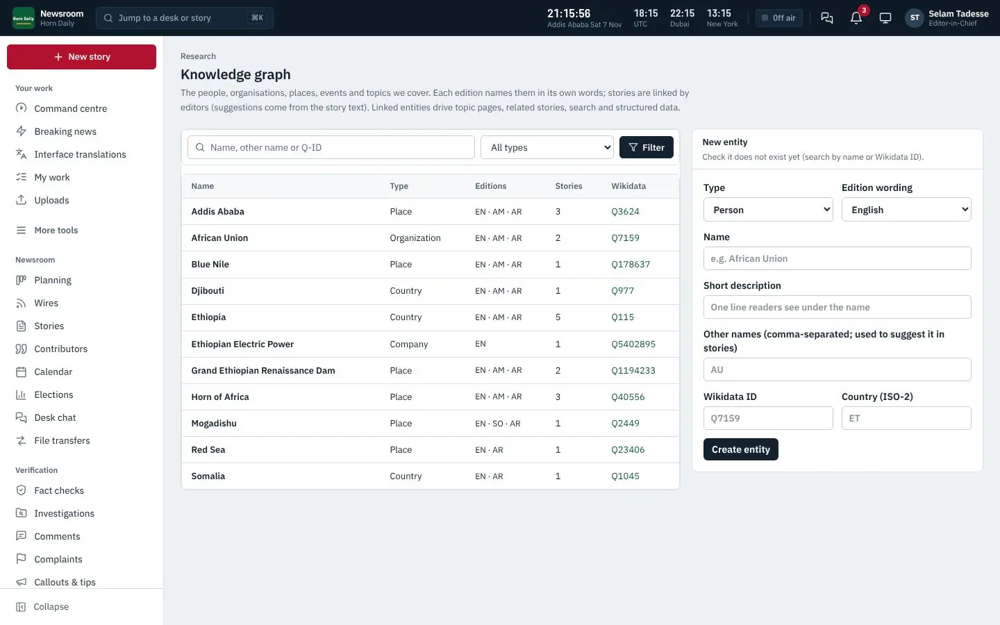
Sections on this screen
- New entity
Fields
- Search entities
- Type
- Type Person Organization Place Country Institution Company Event Topic
- Name
- Short description
- Other names (comma-separated; used to suggest it in stories)
- Wikidata ID
- Country (ISO-2)
Buttons and actions
- Filter
- Create entity
Columns
- Name
- Type
- Editions
- Stories
- Wikidata
4.27Entity
One person, organisation or place with its names in every language and the stories that mention it.
Who uses it: Editors and researchers.
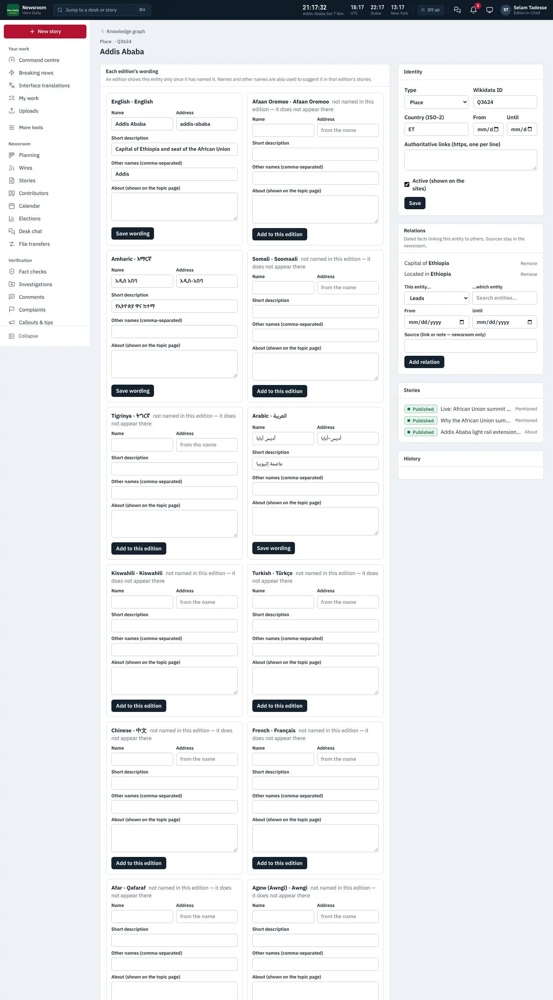
Sections on this screen
- Each edition's wording
- Identity
- Relations
- Stories
- History
Fields
- Name
- Address
- Short description
- Other names (comma-separated)
- About (shown on the topic page)
- Type Person Organization Place Country Institution Company Event Topic
- Wikidata ID
- Country (ISO-2)
- From
- Until
- Authoritative links (https, one per line)
- Active (shown on the sites)
- Source (link or note — newsroom only)
Buttons and actions
- Save wording
- Add to this edition
- Save
- Remove
- Add relation
4.28Storylines
Groups of stories about one developing subject, shown together to readers.
Who uses it: Editors and desk chiefs.
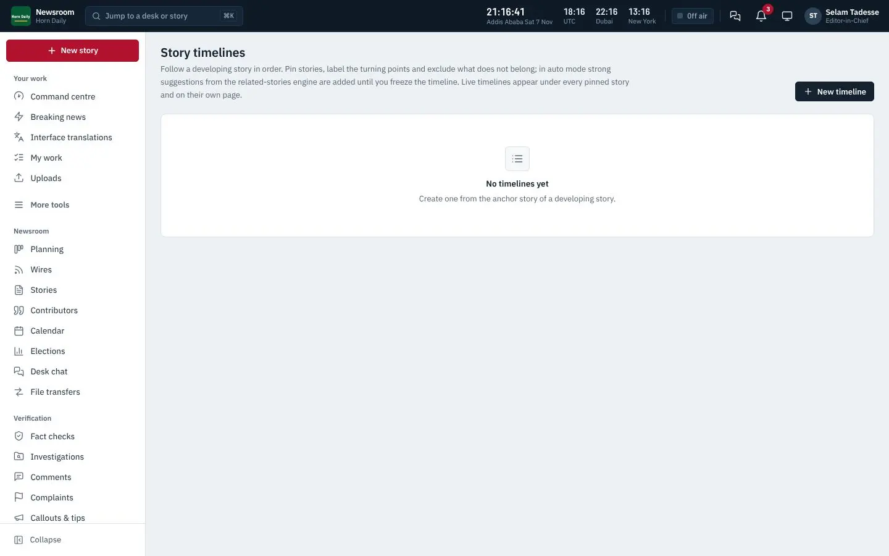
Buttons and actions
- New timeline
4.29Site structure
Sections, topics and menus of each edition.
Who uses it: Senior editors and site editors.
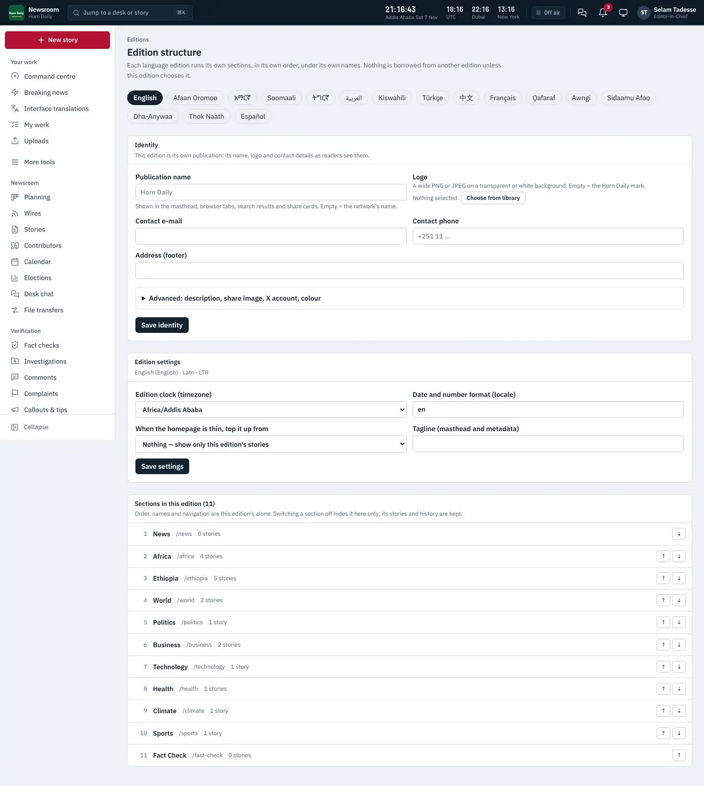
Sections on this screen
- Identity
- Edition settings
- Sections in this edition (11)
Fields
- Contact e-mail
- Contact phone
- Address (footer)
- Date and number format (locale)
- Tagline (masthead and metadata)
Buttons and actions
- Choose from library
- Save identity
- Save settings
4.30Front page layouts
Arrange the front page and section pages of each edition: blocks, order and which stories fill them.
Who uses it: Home page editors.
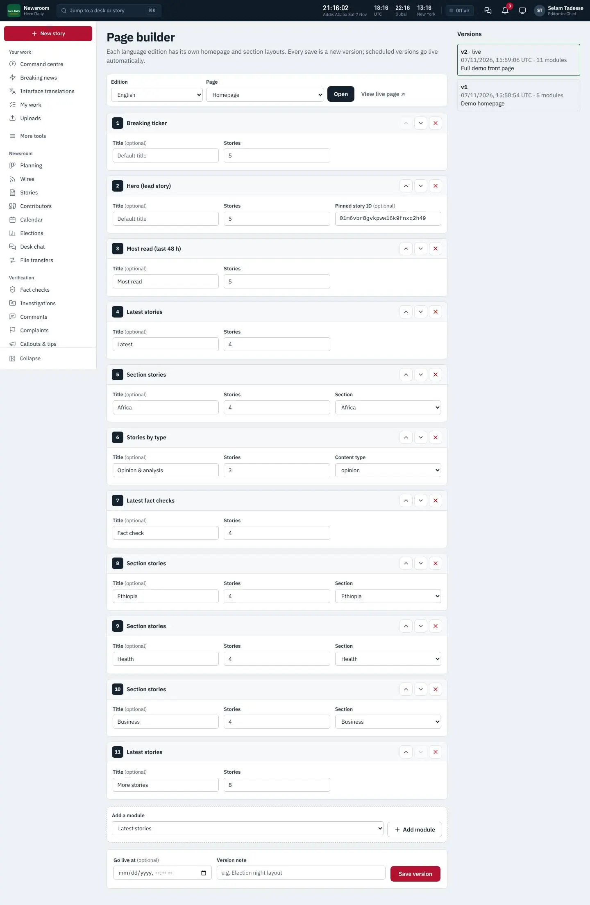
Sections on this screen
- Versions
Fields
- Title (optional)
- Stories
- Pinned story ID (optional)
- Publish
- Go live at (optional)
- Version note
Buttons and actions
- Open
- Move module 1 up
- Move module 1 down
- Remove module 1
- Move module 2 up
- Move module 2 down
- Remove module 2
- Move module 3 up
- Move module 3 down
- Remove module 3
- Move module 4 up
- Move module 4 down
- Remove module 4
- Move module 5 up
- Move module 5 down
- Remove module 5
- Move module 6 up
- Move module 6 down
- Remove module 6
- Move module 7 up
- Move module 7 down
- Remove module 7
4.31Pages
Fixed pages such as About, Contacts, Terms, Privacy, Corrections policy and Transparency, per edition.
Who uses it: Senior editors.
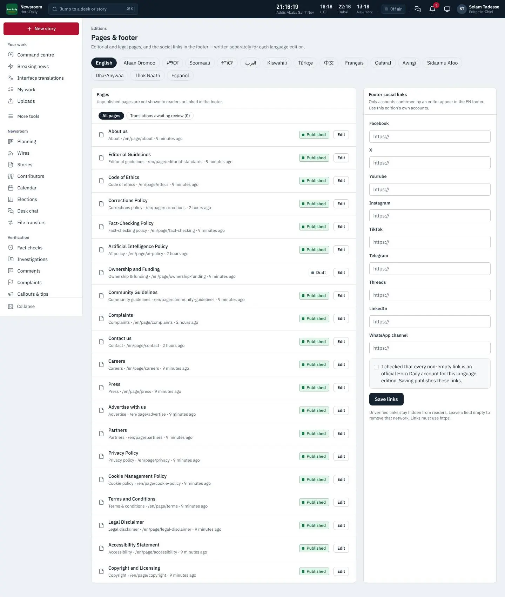
Sections on this screen
- Pages
- Footer social links
Fields
- X
- YouTube
- TikTok
- Telegram
- Threads
- WhatsApp channel
Buttons and actions
- Save links
4.32Page editor
Edit one fixed page in each edition.
Who uses it: Senior editors.
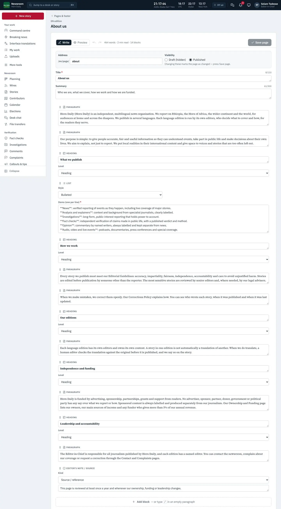
Tabs
- Write
- Preview
Fields
- Address /en/page/
- Visibility
- Draft (hidden)
- Published
- Title *
- Summary
- Level Heading Subheading Minor heading
- Style Bulleted Numbered
- Items (one per line) *
- Kind Editor's note Update Correction Source / reference
Buttons and actions
- Write
- Preview
- Undo
- Redo
- Save page
- Move Paragraph up
- Move Paragraph down
- Duplicate Paragraph
- Delete Paragraph
- Insert block below
- Move Heading up
- Move Heading down
- Duplicate Heading
- Delete Heading
- Move List up
- Move List down
- Duplicate List
- Delete List
- Move Editor's note / source up
- Move Editor's note / source down
- Duplicate Editor's note / source
- Delete Editor's note / source
4.33Editions
Each edition with its language, status (live or preview), time zone, editors and settings.
Who uses it: Managing editors and administrators.
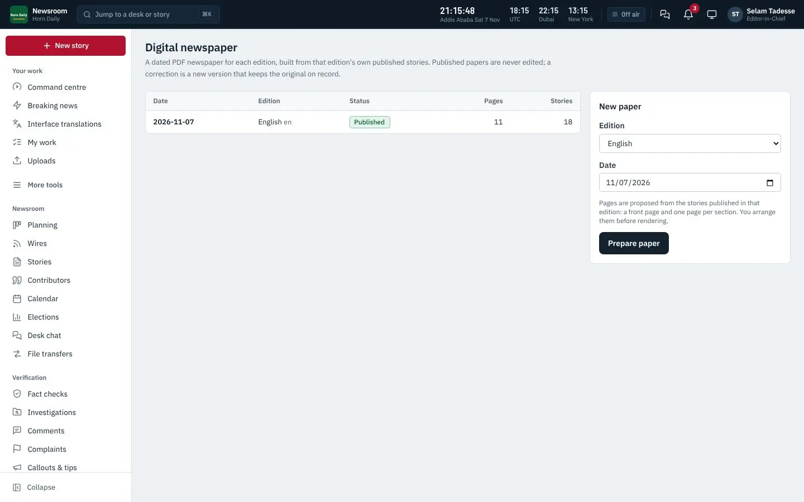
Sections on this screen
- New paper
Fields
- Date
Buttons and actions
- Prepare paper
Columns
- Date
- Edition
- Status
- Pages
- Stories
4.34Edition settings
Settings of one edition: name, language, status, time zone, social profiles, default sections and launch checklist.
Who uses it: Managing editors and administrators.
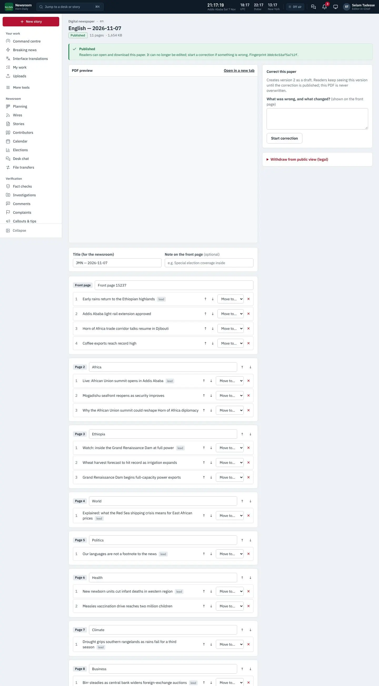
Sections on this screen
- PDF preview
- Correct this paper
Fields
- Title (for the newsroom)
- Note on the front page (optional)
- What was wrong, and what changed? (shown on the front page)
Buttons and actions
- + Add page
- Start correction
4.35Search and sharing
How the outlet appears in search engines and social networks: titles, descriptions, sitemaps and social cards per edition.
Who uses it: SEO and audience editors.
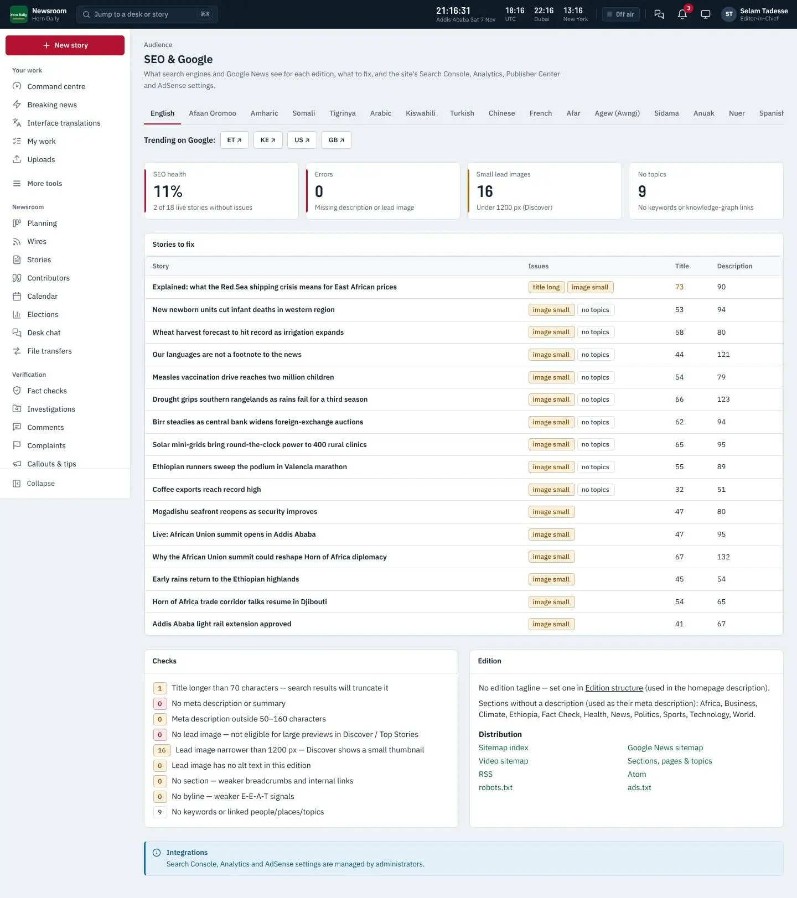
Sections on this screen
- Stories to fix
- Checks
- Edition
- Distribution
Columns
- Story
- Issues
- Title
- Description
4.36Newsletters
Lists, issues and schedules for every edition. Create an issue by hand or let the system assemble it from the latest stories.
Who uses it: Newsletter editors.
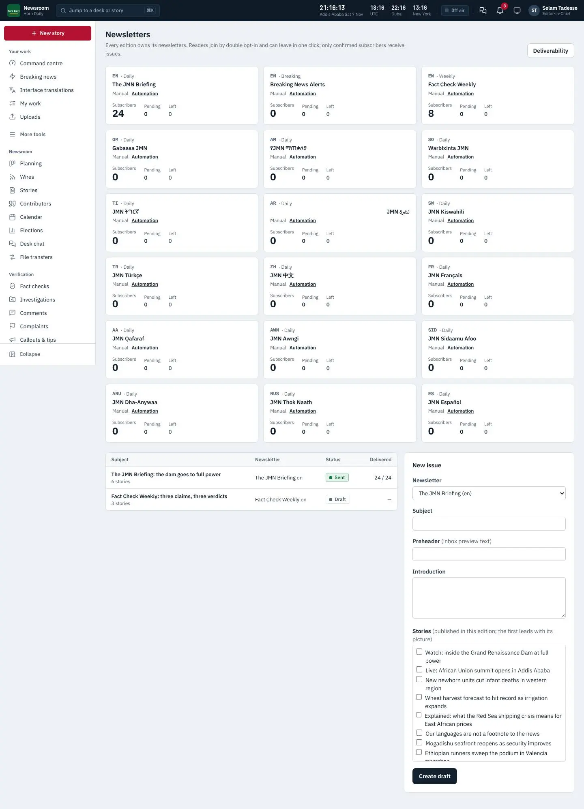
Sections on this screen
- The MediaOS Briefing
- Breaking News Alerts
- Fact Check Weekly
- Gabaasa MediaOS
- የJMN ማጠቃለያ
- Warbixinta MediaOS
- MediaOS ትግርኛ
- نشرة MediaOS
- MediaOS Kiswahili
- MediaOS Türkçe
- MediaOS 中文
- MediaOS Français
- MediaOS Qafaraf
- MediaOS Awngi
- MediaOS Sidaamu Afoo
- MediaOS Dha-Anywaa
Fields
- Subject
- Preheader (inbox preview text)
- Introduction
- Stories (published in this edition; the first leads with its picture)
- Watch: inside the Grand Renaissance Dam at full power
- Live: African Union summit opens in Addis Ababa
- New newborn units cut infant deaths in western region
- Wheat harvest forecast to hit record as irrigation expands
- Explained: what the Red Sea shipping crisis means for East African prices
- Our languages are not a footnote to the news
- Mogadishu seafront reopens as security improves
- Ethiopian runners sweep the podium in Valencia marathon
- Measles vaccination drive reaches two million children
- Solar mini-grids bring round-the-clock power to 400 rural clinics
- Birr steadies as central bank widens foreign-exchange auctions
- Drought grips southern rangelands as rains fail for a third season
- Why the African Union summit could reshape Horn of Africa diplomacy
- Grand Renaissance Dam begins full-capacity power exports
- Coffee exports reach record high
- Horn of Africa trade corridor talks resume in Djibouti
- Addis Ababa light rail extension approved
- Early rains return to the Ethiopian highlands
Buttons and actions
- Create draft
Columns
- Subject
- Newsletter
- Status
- Delivered
How to use it
- Select a list.
- Create an issue or open the next automatic one.
- Check the content and the subject line.
- Send a test to yourself.
- Schedule or send.
4.37Newsletter issue
One issue: subject, preview text, blocks of stories, sponsor, test sending and schedule.
Who uses it: Newsletter editors.
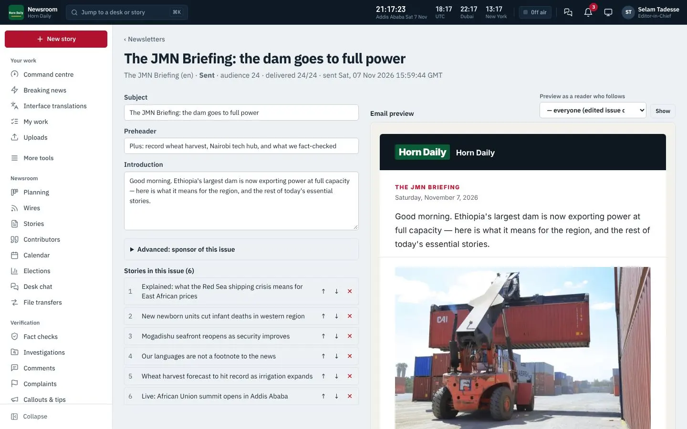
Fields
- Subject
- Preheader
- Introduction
Buttons and actions
- Show
4.38Deliverability
Delivered messages, bounces and complaints per list, and addresses that were suppressed.
Who uses it: Newsletter editors and administrators.
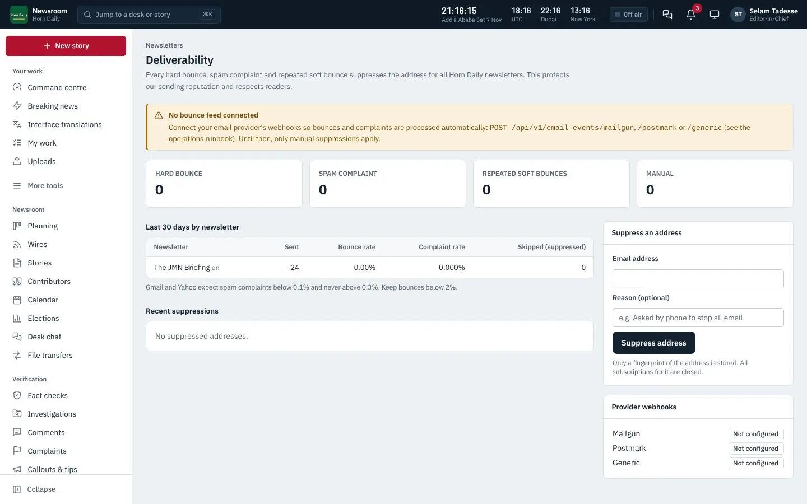
Sections on this screen
- Last 30 days by newsletter
- Recent suppressions
- Suppress an address
- Provider webhooks
Fields
- Email address
- Reason (optional)
Buttons and actions
- Suppress address
Columns
- Newsletter
- Sent
- Bounce rate
- Complaint rate
- Skipped (suppressed)
4.39Newsletter list
One list: name in each language, subscribers, sign-up form, automatic issue rules.
Who uses it: Newsletter editors.
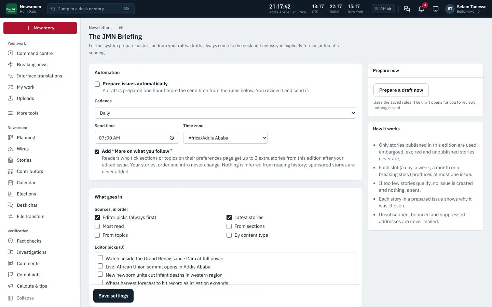
Sections on this screen
- Automation
- What goes in
- Prepare now
- How it works
Fields
- Cadence Daily Weekly Monthly Breaking Occasional
- Send time
- Sources, in order
- Editor picks (always first)
- Latest stories
- Most read
- From sections
- From topics
- By content type
- Editor picks (0)
- Watch: inside the Grand Renaissance Dam at full power
- Live: African Union summit opens in Addis Ababa
- New newborn units cut infant deaths in western region
- Wheat harvest forecast to hit record as irrigation expands
- Explained: what the Red Sea shipping crisis means for East African prices
- Our languages are not a footnote to the news
- Mogadishu seafront reopens as security improves
- Ethiopian runners sweep the podium in Valencia marathon
- Measles vaccination drive reaches two million children
- Solar mini-grids bring round-the-clock power to 400 rural clinics
- Birr steadies as central bank widens foreign-exchange auctions
- Drought grips southern rangelands as rains fail for a third season
Buttons and actions
- Save settings
- Prepare a draft now
4.40E-mail templates
Every e-mail the system sends to readers and staff, editable per language.
Who uses it: Administrators and audience editors.
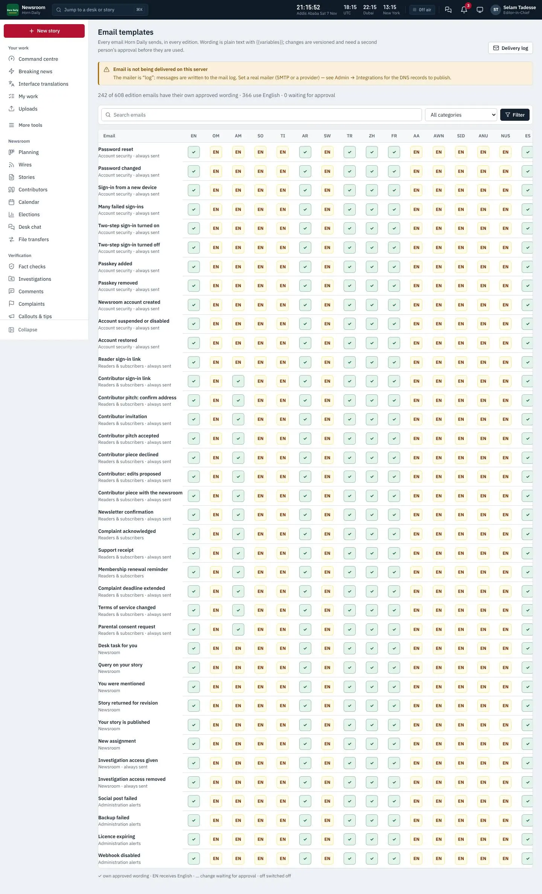
Fields
- Search emails
- Category
Buttons and actions
- Filter
Columns
- EN
- OM
- AM
- SO
- TI
- AR
- SW
- TR
- ZH
- FR
- AA
- AWN
- SID
4.41E-mail template editor
One message in one language: subject, text, preview and test sending.
Who uses it: Administrators and audience editors.
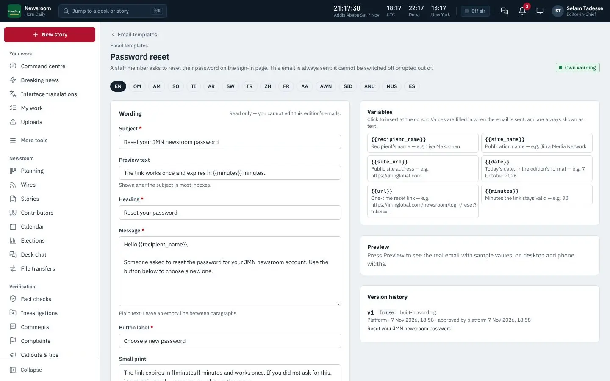
Sections on this screen
- Wording
- Variables
- Preview
- Version history
Fields
- Subject *
- Preview text
- Heading *
- Message *
- Button label *
- Small print
Buttons and actions
- Preview
- Send test to me
- {{recipient_name}} Recipient’s name — e.g. Liya Mekonnen
- {{site_name}} Publication name — e.g. Horn Daily
- {{site_url}} Public site address — e.g. https://horndaily.example
- {{date}} Today’s date, in the edition’s format — e.g. 7 October 2026
- {{url}} One-time reset link — e.g. https://horndaily.example/newsroom/login/reset?token=…
- {{minutes}} Minutes the link stays valid — e.g. 30
4.42E-mail log
Messages sent recently, with their status, for troubleshooting.
Who uses it: Administrators.
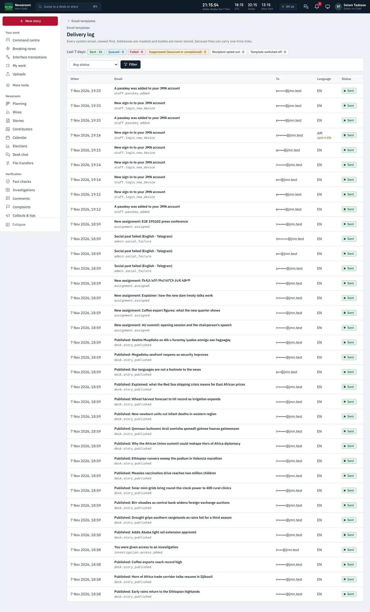
Fields
- Status
Buttons and actions
- Filter
Columns
- When
- To
- Language
- Status
4.43Push notifications
Notifications to the website and apps by edition and topic, with history and results.
Who uses it: Audience editors.
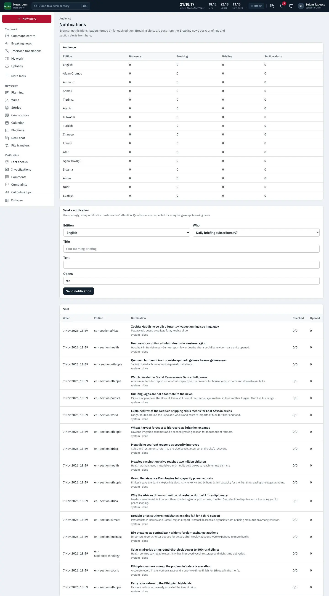
Sections on this screen
- Audience
- Send a notification
- Sent
Fields
- Who Daily briefing subscribers (0)
- Title
- Text
- Opens
Buttons and actions
- Send notification
Columns
- Edition
- Browsers
- Breaking
- Briefing
- Section alerts
- When
- Notification
- Reached
- Opened
4.44Social publishing
Posts to the outlet's social accounts, scheduled and sent, per edition.
Who uses it: Social editors.
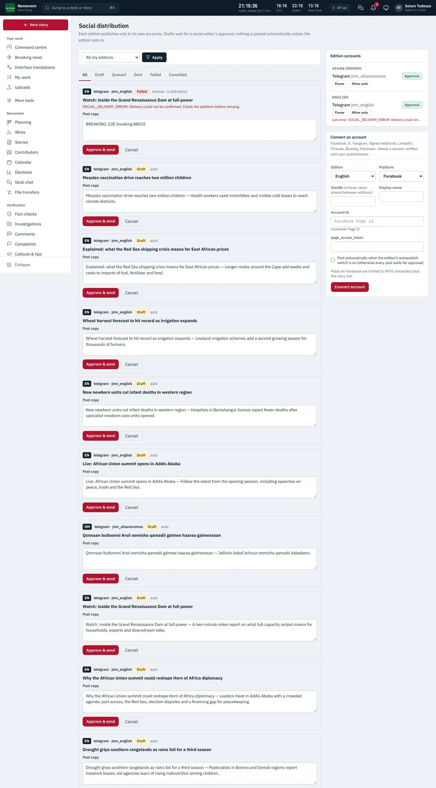
Sections on this screen
- Watch: inside the Grand Renaissance Dam at full power
- Measles vaccination drive reaches two million children
- Explained: what the Red Sea shipping crisis means for East African prices
- Wheat harvest forecast to hit record as irrigation expands
- New newborn units cut infant deaths in western region
- Live: African Union summit opens in Addis Ababa
- Qonnaan bultoonni Arsii oomisha qamadii galmee haaraa galmeessan
- Why the African Union summit could reshape Horn of Africa diplomacy
- Drought grips southern rangelands as rains fail for a third season
- Birr steadies as central bank widens foreign-exchange auctions
- Solar mini-grids bring round-the-clock power to 400 rural clinics
- Ethiopian runners sweep the podium in Valencia marathon
- Mogadishu seafront reopens as security improves
- Our languages are not a footnote to the news
- Horn of Africa trade corridor talks resume in Djibouti
- Coffee exports reach record high
Fields
- Edition
- Post copy
- Platform Facebook X Telegram Signed webhook LinkedIn Threads Bluesky Mastodon
- Handle (unique; never shared between editions)
- Display name
- Account idFacebook Page id
- page_access_token
Buttons and actions
- Apply
- Approve & send
- Cancel
- Pause
- Allow auto
- Connect account
4.45Messaging channels
Distribution to messaging channels such as Telegram and WhatsApp channels.
Who uses it: Audience editors.
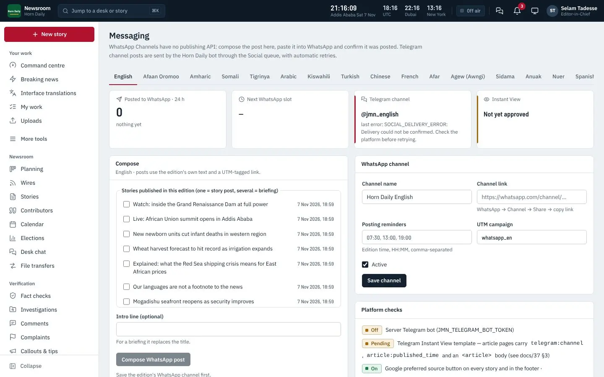
Sections on this screen
- Compose
- WhatsApp channel
- Platform checks
- Post log
Fields
- Stories published in this edition (one = story post, several = briefing)
- Watch: inside the Grand Renaissance Dam at full power 7 Nov 2026, 18:59
- Live: African Union summit opens in Addis Ababa 7 Nov 2026, 18:59
- New newborn units cut infant deaths in western region 7 Nov 2026, 18:59
- Wheat harvest forecast to hit record as irrigation expands 7 Nov 2026, 18:59
- Our languages are not a footnote to the news 7 Nov 2026, 18:59
- Mogadishu seafront reopens as security improves 7 Nov 2026, 18:59
- Ethiopian runners sweep the podium in Valencia marathon 7 Nov 2026, 18:59
- Measles vaccination drive reaches two million children 7 Nov 2026, 18:59
- Solar mini-grids bring round-the-clock power to 400 rural clinics 7 Nov 2026, 18:59
- Birr steadies as central bank widens foreign-exchange auctions 7 Nov 2026, 18:59
- Drought grips southern rangelands as rains fail for a third season 7 Nov 2026, 18:59
- Why the African Union summit could reshape Horn of Africa diplomacy 7 Nov 2026, 18:59
- Grand Renaissance Dam begins full-capacity power exports 7 Nov 2026, 18:59
- Coffee exports reach record high 7 Nov 2026, 18:58
- Horn of Africa trade corridor talks resume in Djibouti 7 Nov 2026, 18:58
- Addis Ababa light rail extension approved 7 Nov 2026, 18:58
- Early rains return to the Ethiopian highlands 7 Nov 2026, 18:58
- Intro line (optional) For a briefing it replaces the title.
- Channel name
- Channel link WhatsApp → Channel → Share → copy link
- Posting reminders Edition time, HH:MM, comma-separated
Buttons and actions
- Compose WhatsApp post
- Send to Telegram
- Save channel
4.46SMS and USSD
Headlines and alerts to basic phones, keywords per edition, subscribers and sending history.
Who uses it: Audience editors.
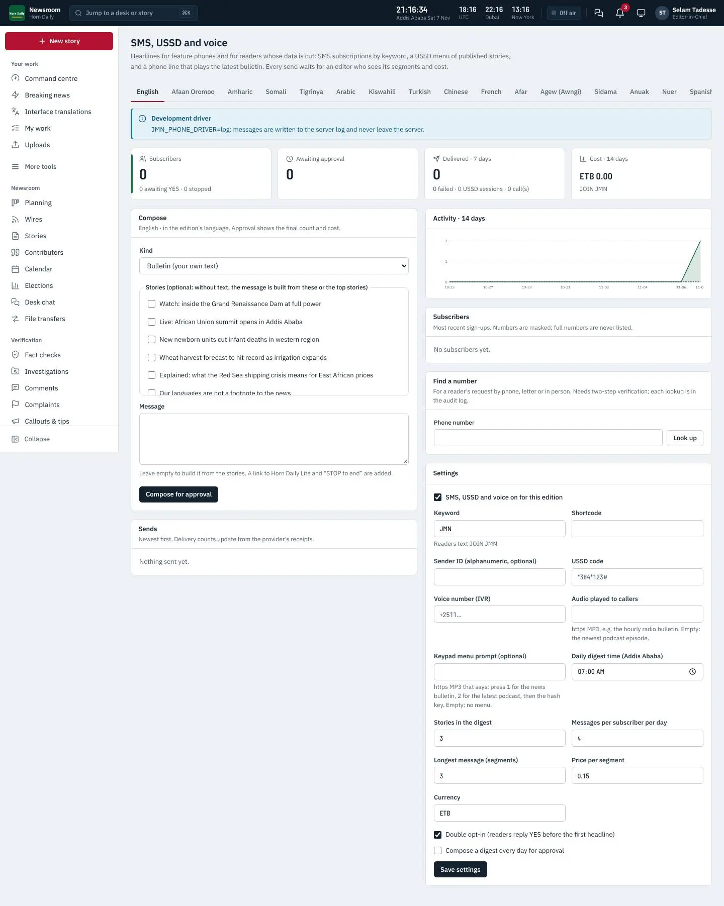
Sections on this screen
- Compose
- Sends
- Activity · 14 days
- Subscribers
- Find a number
- Settings
Fields
- Kind Bulletin (your own text) Headline digest (top stories) Breaking (one story)
- Stories (optional: without text, the message is built from these or the top stories)
- Watch: inside the Grand Renaissance Dam at full power
- Live: African Union summit opens in Addis Ababa
- New newborn units cut infant deaths in western region
- Wheat harvest forecast to hit record as irrigation expands
- Explained: what the Red Sea shipping crisis means for East African prices
- Our languages are not a footnote to the news
- Mogadishu seafront reopens as security improves
- Ethiopian runners sweep the podium in Valencia marathon
- Measles vaccination drive reaches two million children
- Solar mini-grids bring round-the-clock power to 400 rural clinics
- Birr steadies as central bank widens foreign-exchange auctions
- Drought grips southern rangelands as rains fail for a third season
- Phone number
- SMS, USSD and voice on for this edition
- Keyword Readers text JOIN MediaOS
- Shortcode
- Sender ID (alphanumeric, optional)
- USSD code
- Voice number (IVR)
- Daily digest time (Addis Ababa)
Buttons and actions
- Compose for approval
- Look up
- Save settings
Columns
- 10-25
- 10-26
- 10-27
- 10-28
- 10-29
- 10-30
- 10-31
- 11-01
- 11-02
- 11-03
- 11-04
- 11-05
- 11-06
- 11-07
4.47Callouts
Requests to readers for experiences, photos or documents, with the answers received.
Who uses it: Editors and engagement staff.
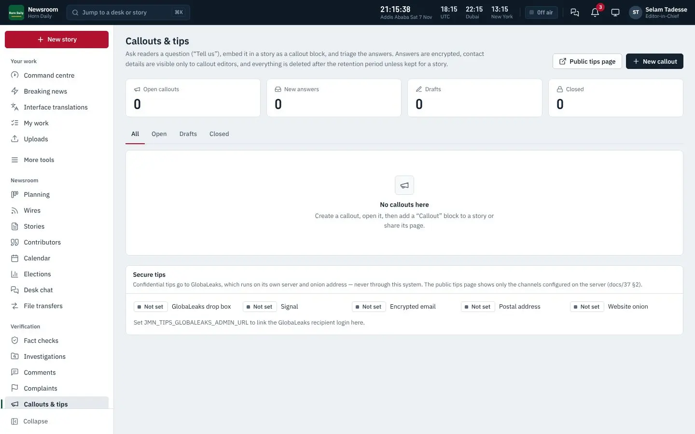
Sections on this screen
- Secure tips
Buttons and actions
- New callout
4.48Polls
Polls for stories and broadcast, with results.
Who uses it: Editors and producers.
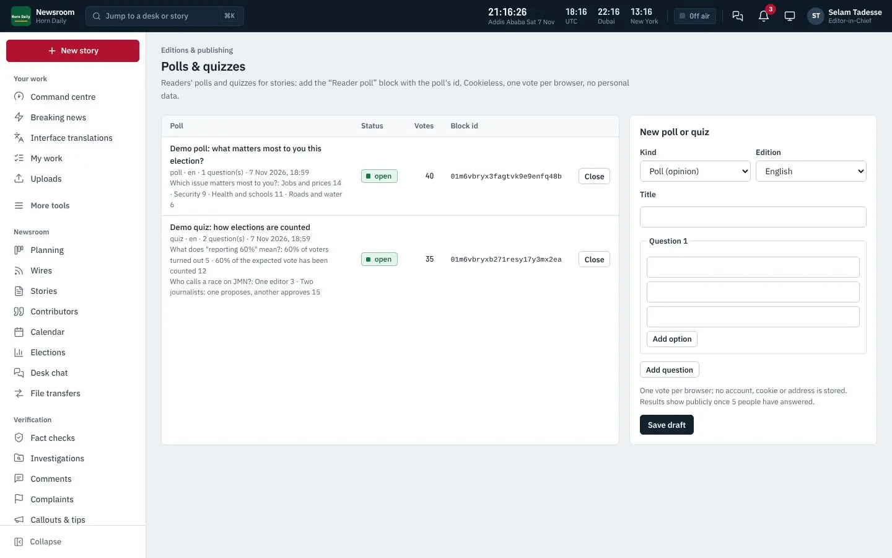
Sections on this screen
- New poll or quiz
Fields
- Kind Poll (opinion) Quiz (right answers)
- Title
- Question 1
Buttons and actions
- Close
- Add option
- Add question
- Save draft
Columns
- Poll
- Status
- Votes
- Block id
- Actions
4.49Comments moderation
Comments waiting for approval, reported comments and moderation history.
Who uses it: Moderators.

Fields
- Ban commenter for 1 day 7 days 30 days 1 year
Buttons and actions
- Approve
- Reject
- Apply
How to use it
- Open the queue.
- Approve, reject or hide each comment.
- Handle reports first; they are at the top.
4.50Complaints
Readers' complaints: new, assigned, answered and closed, with deadlines.
Who uses it: Standards editor, managing editor.
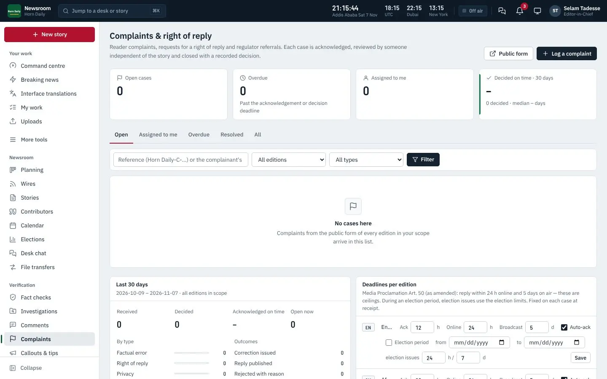
Sections on this screen
- Last 30 days
- Deadlines per edition
Fields
- Ack h
- Online h
- Broadcast d
- Auto-ack
- Election period
- from
- to
- election issues h / d
Buttons and actions
- Log a complaint
- Filter
- Save
4.51Contributors
Freelance and citizen contributors, their submissions, verification and payment records.
Who uses it: Contributor editors.
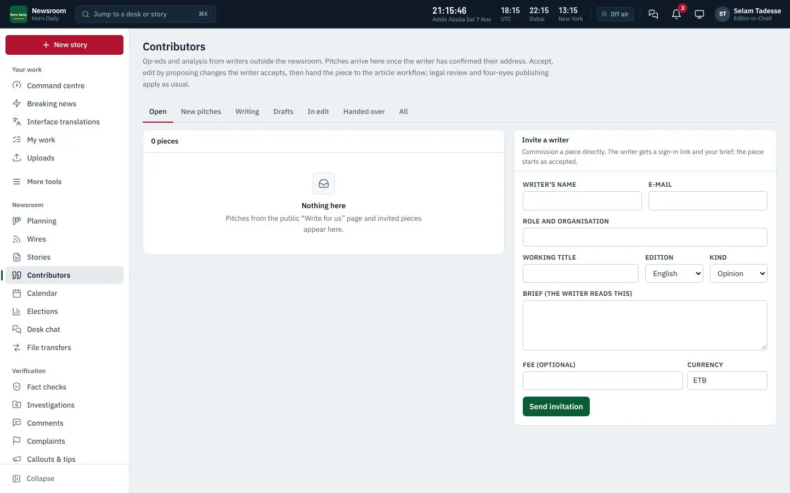
Sections on this screen
- 0 pieces
- Invite a writer
Fields
- WRITER'S NAME
- ROLE AND ORGANISATION
- WORKING TITLE
- EDITION
- KIND
- BRIEF (THE WRITER READS THIS)
- FEE (OPTIONAL)
- CURRENCY
Buttons and actions
- Send invitation
4.52Podcasts
Shows and their episodes.
Who uses it: Podcast producers.
Sections on this screen
- Fact Check Weekly
- The Briefing
- New podcast
Fields
- Address (/podcasts/…)
- Title
- Description
- Author
- Owner email (Apple Podcasts)
- Category
- Subcategory
- Type Episodic (newest first) Serial (in order)
- Explicit content
- Artwork (square, ≥1400 px)
Buttons and actions
- Create podcast
4.53Podcast show
One show: artwork, description, categories, feed and episodes.
Who uses it: Podcast producers.
Sections on this screen
- Episodes (1)
- New episode
Fields
- Title
- Summary (shown in podcast apps)
- Audio
- Season
- Episode
- Type Full Trailer Bonus
- Explicit
- Chapters (one per line: 0:00 Intro)
- Show notes
- Transcript (accessibility; published as a Podcasting 2.0 transcript)
Buttons and actions
- Create draft
Columns
- Episode
- Audio
- Status
4.54Podcast episode
One episode: audio, description, transcript, chapters and publication time.
Who uses it: Podcast producers.
Sections on this screen
- Episode details
- Publishing
Fields
- Title
- Summary (shown in podcast apps)
- Audio
- Season
- Episode
- Type Full Trailer Bonus
- Explicit
- Chapters (one per line: 0:00 Intro)
- Show notes
- Transcript (accessibility; published as a Podcasting 2.0 transcript)
- Address
- Schedule for (empty = now)
Buttons and actions
- Save episode
- Publish now
- Cancel schedule
4.55Studio
The studio control page: sources, remote guests, recording and going live.
Who uses it: Producers and directors (Broadcast edition).
Sections on this screen
- Switcher
- Live safeguard
- Transmission
- Audio
- Health
Fields
- Channel MediaOS Afaan Oromoo MediaOS Amharic MediaOS TV English
- Studio app OBS Studio Meld Studio
- Address
- WebSocket password
- Audio meters
Buttons and actions
- This computer
- Studio bridge
- Connect
- TAKE
- DUMP · CUT TO SLATE
- Start stream
- Record
4.56Graphics
Lower thirds, tickers and full-screen graphics sent to the overlay.
Who uses it: Graphics operators.
Sections on this screen
- Lower third
- Locator
- Live tag
- Breaking strap
- Ticker
- Score
- Audience question
- Programme bug
- Clock
- Countdown
- Full-screen
- Programme preview
- Presets
Fields
- Channel MediaOS Afaan Oromoo MediaOS Amharic MediaOS TV English
- Name
- Role
- Style
- Place
- Label
- Kicker
- Headline
- Speed
- Items — one per line
- Home
- Away
- Home goals
- Away goals
- Period
- Question
- From
- Platform
- Text
- Time zone
- Format
- Counts down to
Buttons and actions
- Clear all
- TAKE
- Save as preset
- Save preset
- Home goals minus one
- Home goals plus one
- Away goals minus one
- Away goals plus one
- +2m
- +5m
- +10m
- +30m
- Copy URL
- Recall
- Take
- Delete preset Ahmed Nur
- Delete preset Hodan Warsame
- Delete preset Liya Mekonnen
- Delete preset Selam Tadesse
- Delete preset Addis Ababa
- Delete preset Evening headlines
4.57Remote guests
Invite and manage remote guests who join from a browser link.
Who uses it: Producers.
Sections on this screen
- On air 0
- Green room 1
Fields
- Channel
Buttons and actions
- Invite a guest
- Collapse
- Copy
- Connected
- Put on air
- New links
- Cancel
4.58Broadcast desk
Overview of channels, programmes on air, rundowns of the day and studios.
Who uses it: Broadcast producers (Broadcast edition).
Sections on this screen
- MediaOS Afaan Oromoo
- MediaOS Amharic
- MediaOS TV English
- MediaOS Radio
Buttons and actions
- Overlay URL
4.59Stream destinations
Where live streams go: website, apps and outside platforms.
Who uses it: Broadcast engineers.
Sections on this screen
- MediaOS Afaan Oromoo
- MediaOS Amharic
- MediaOS TV English
- MediaOS Radio
Fields
- Channel
- Active
Buttons and actions
- Add destination
- Copy server address
- YouTube (demo placeholder): active
- Verified
- Edit
- Remove YouTube (demo placeholder)
- Meld Multi (demo): active
- Make primary
- Remove Meld Multi (demo)
- Add the first destination
4.60Election graphics
Graphics for election nights fed by verified results.
Who uses it: Election producers.
Fields
- From
- To
- Channel All channels MediaOS Radio MediaOS Afaan Oromoo MediaOS Amharic MediaOS TV English
Buttons and actions
- Show
4.61Audience interaction
Questions, votes and messages from the audience for programmes.
Who uses it: Producers.
Sections on this screen
- Open a stream
Fields
- Show
- Where messages come from
- Website and apps Signed-in readers ask on the live page.
- SMS keyword Listeners text the keyword and their question to the edition's short code.
- Phoned-in Producers type in questions from callers.
Buttons and actions
- Open stream
4.62Interaction session
Moderate incoming messages for one programme and choose what goes on air.
Who uses it: Producers.
Sections on this screen
- Messages
- ON AIR
- ADD A QUESTION
- STREAM
Fields
- Platform
- From
- By Phone E-mail Other
- Question
Buttons and actions
- Waiting
- Approved
- Held
- Pinned
- For presenter
- Rejected
- All
- Add
- Close stream
4.63Presenter view
The approved questions and messages, large and clear, for the presenter.
Who uses it: Presenters.
4.64Rundowns
Programmes with their running orders by date.
Who uses it: Producers.
Fields
- Air date
- Channel
- Status
Buttons and actions
- Previous day
- Next day
- Templates
- New rundown
Columns
- On air
- Rundown
- Channel
- Status
- Items
- Running
- Planned
- Over/under
4.65Rundown
The running order of one programme: items, timings, scripts, media and the prompter.
Who uses it: Producers, presenters, directors.

Tabs
- Script
- Item
- Prompter
Fields
- Script for OPEN
Buttons and actions
- Hide panel
- As-run
- Back to draft
- TAKE OPEN
- Add item after OPEN
- Take
- Script
- Item
- Prompter
- [CAM 1]
- [CAM 2]
- [TWO-SHOT]
- [VT IN]
- [VT OUT]
- [SOT]
- [GFX]
- [LIVE]
- [BREAK]
Columns
- Move
- Pg
- Slug
- Type
- Title
- Presenter
- Source
- Est
- Actual
- Front
- Back
- Status
How to use it
- Add items in running order.
- Write or link the script for each item.
- Check the total time against the slot.
- Open the prompter for the presenter.
- Mark items done during the show.
4.66Broadcast schedule
The programme schedule per channel, shown on the website.
Who uses it: Schedulers.
Sections on this screen
- Day list
Fields
- Day
- Channel
Buttons and actions
- Guide
- Programmes
- Previous day
- Next day
- Book slot
- 08:00 Oduu Guyyaa
- 20:00 Oduu Guyyaa
- 08:30 ዜና
- 20:30 ዜና
- 07:00 The Horn Briefing
- 12:00 Africa Today
- 13:00 Business Desk
- 19:00 LIVE MediaOS Newshour
- 21:00 R Africa Today
- 06:00 LIVE Morning Drive
- 12:00 The Horn Briefing (Radio)
- 18:00 The Horn Briefing (Radio)
- Edit
Columns
- Time
- Programme
- Channel
- Status
- Length
- Running order
- Actions
4.67Broadcast setup
Channels, studios, encoders and the connection to studio equipment.
Who uses it: Broadcast engineers.
Buttons and actions
- Channels · 4
- Studio devices · 0/1
- Studio Kit
- New channel
- Rotate key
- Edit
Columns
- Channel
- Edition
- Time zone
- Engine
- Studio
- State
- Actions
4.68Studios
Each studio with its sources and status.
Who uses it: Broadcast engineers.
Sections on this screen
- E2E studio desktop mw6lwkai
- E2E studio mobile mw6mfgwv
- Bookings
Fields
- Week starting
Buttons and actions
- Add studio
- Edit E2E studio desktop mw6lwkai
- Edit E2E studio mobile mw6mfgwv
- Previous week
- Next week
4.69Elections
Elections with contests, candidates and results entry.
Who uses it: Election editors.
Sections on this screen
- Elections
- New election
Fields
- Kind General Presidential Parliamentary Regional Local Referendum By-election Primary
- Title (in the owning edition)
- Address
- Country (ISO code)
- Election day
- Default source of figures
- Show results in these editions
- English
- Afaan Oromoo
- Amharic
- Somali
- Tigrinya
- Arabic
- Kiswahili
- Turkish
- Chinese
- French
- Afar
- Agew (Awngi)
- Sidama
- Anuak
- Nuer
Buttons and actions
- Create election
Columns
- Election
- Status
- Races
- Called
- To verify
- Calls waiting
- Updated
4.70Election
One election: contests, candidates, parties, results entry with two-person verification and publication.
Who uses it: Election editors and results staff.
Sections on this screen
- Figures waiting for a second check (2)
- Race calls waiting for approval (1)
- Races
- Work on: President
- Enter figures
- Propose a race call
- Add a candidate
- Parties, areas and races
- Import a CSV
- Embed the results
- Audit trail
Fields
- Reporting %
- As of (released at)
- Source
- Source link (https, optional)
- Votes per candidate
- Amina Doe (GVP)
- Tomas Rivera (HU)
- Lena Okafor (CA)
- Sam Ibsa
- Valid votes (optional)
- Ballots cast (optional)
- Registered voters (optional)
- Call Winner Runoff
- Candidates
- Amina Doe
- Tomas Rivera
- Lena Okafor
- Who calls it Horn Daily decision desk projection Declared by the election authority
- Basis (what the figures show, or who declared it)
- Source (optional)
- Name
- Party Independent / none Green Valley Party Highland Union Coastal Alliance
Buttons and actions
- Mark results final
- Back to draft
- Verify against the source
- Reject
- Approve call
- Open
- Work on
- Submit figures
- Propose call
- Add candidate
- Add party
- Save area
- Add race
- Import
Columns
- Race
- Status
- Reporting
- Latest verified
- Call
- Open
4.71Analytics
Readers, page views, reading time, sources and top stories per edition.
Who uses it: Editors and audience staff (Professional edition).
Sections on this screen
- Traffic
- Top stories
- Right now
- Being read now
- Where readers come from
- Devices
- Page speed for real readers
- Top referring sites
- Countries
- What readers search for
Columns
- 19:00
- 20:00
- 21:00
- 22:00
- 23:00
- 00:00
- 01:00
- 02:00
- 03:00
- 04:00
- 05:00
- 06:00
- 07:00
- 08:00
4.72Story analytics
How one story performs: readers over time, sources, reading time and newsletter and push results.
Who uses it: Editors and the author.
Sections on this screen
- Views
- Traffic sources
Columns
- 1 Nov
- 2 Nov
- 3 Nov
- 4 Nov
- 5 Nov
- 6 Nov
- 7 Nov
4.73Revenue
Memberships, plans, payments and revenue reports.
Who uses it: Commercial staff.

4.74Advertising
Advertisers, campaigns, placements and reports.
Who uses it: Advertising staff.
4.75Campaign
One campaign: creatives, placements, dates, limits and delivery.
Who uses it: Advertising staff.
4.76Staff directory
Everyone in the newsroom with their desk, role and contact.
Who uses it: Everyone.
Fields
- Search staff
- Department
- Visibility
- Account status
Buttons and actions
- Filter
Columns
- Name
- Role
- Department
- Profile
- Updated
4.77Staff profile
A colleague's public profile, byline and contact.
Who uses it: Everyone.
Fields
- Role and beat
- Job title (default) Shown in editions that have no title of their own below.
- Based in (city)
- Areas covered Separate with commas. Up to 12.
- Expertise
- Working languages
- English
- Afaan Oromoo
- አማርኛ
- Soomaali
- ትግርኛ
- العربية
- Kiswahili
- Türkçe
- 中文
- Français
- Qafaraf
- Awngi
- Sidaamu Afoo
- Dha-Anywaa
- Thok Naath
- Español
Buttons and actions
- Remove
- + Add a link
- + Add a credential
- Save profile
4.78My profile and security
Your byline, photo, languages, password, two-step sign-in, passkeys and sessions.
Who uses it: Everyone.
Sections on this screen
- Passkeys
- Change your password
- Where you're signed in
- AI assistant access
Fields
- Role and beat
- Job title (default) Shown in editions that have no title of their own below.
- Based in (city)
- Areas covered Separate with commas. Up to 12.
- Expertise
- Working languages
- English
- Afaan Oromoo
- አማርኛ
- Soomaali
- ትግርኛ
- العربية
- Kiswahili
- Türkçe
- 中文
- Français
- Qafaraf
- Awngi
- Sidaamu Afoo
- Dha-Anywaa
- Thok Naath
- Español
Buttons and actions
- Remove
- + Add a link
- + Add a credential
- Save profile
- Save email preferences
- Add a passkey
- Change password
- Sign out
- Sign out everywhere else
- Copy
- Create token
How to use it
- Update your byline and photo.
- Set up two-step sign-in or a passkey.
- Review signed-in devices and sign out the ones you do not recognise.
4.79Newsroom chat
Conversations by desk and by story.
Who uses it: Everyone.
Sections on this screen
- Newsroom
Fields
- Find a channel
- Message Newsroom
Buttons and actions
- Newsroom
- Breaking desk
- Desk e2e mw6mbqre: council approves water budget
- Desk e2e mw6lod9n: council approves water budget
- Our languages are not a footnote to the news
- Afaan Oromoo Desk
- Afar Desk
- Agew (Awngi) Desk
- Amharic Desk
- Anuak Desk
- Arabic Desk
- Breaking News Desk
- Chinese Desk
- Data Journalism Desk
- English Desk
- Fact-Check Desk
- French Desk
- Investigations Desk
- Kiswahili Desk
- Nuer Desk
- Sidama Desk
- Somali Desk
Index
Every chapter, section and topic in this volume, with its page.
The Sham MediaOS library
Sham MediaOS is a newsroom, website, apps and broadcast platform that a news organisation installs on its own server, in its own languages, under its own brand. These volumes cover it from the reader's first visit to the engineer's last database migration.
Sham Software Systems Development General Trading PLC · Addis Ababa, Ethiopia · sham.et
Sham MediaOS is a product of Sham Software Systems Development General Trading PLC. Screens show the example outlet “Horn Daily”; your newsroom shows your own name, colour and languages.